Introduction
Writing algorithms is a good way of learning the "ways", or better, the expressiveness of the rust language.
Merge Algorithms
Merging two or more ordered sets
The basic use case for these algorithms is merging two ordered arrays into a single and ordered array. Although simple, it becomes far more complicated when you consider
- Very large datasets spanning many processing nodes (segmentation, map/reduce, etc)
- Memory and cpu constraints on embedded systems (in-place, out-of-place)
Benchmarks
The following benchmarks provide an indicative performance comparison between the different merge implementations. The input size used is 5,000 (2 x 2,500) elements.
Out of place merge function
===========================
test bench_merge_iterator ... bench: 61,250 ns/iter (+/- 5,708)
In place merge functions
========================
test bench_merge_lazy ... bench: 80,606 ns/iter (+/- 2,367)
test bench_merge_mut ... bench: 68,282 ns/iter (+/- 8,597)
test bench_merge_mut_adjacent ... bench: 43,533 ns/iter (+/- 655)
Implementation
The chapters that follow, provide a detailed explanation on how the below implementation works
/// Applies memory efficient in-place merging when two slices are adjacent to each other.
/// ```
/// use csx3::merge::merge_mut_fast;
///
/// let mut input = vec![1, 3, 5, 7, 9, 2, 4, 6, 8, 10];
/// let (s1,s2) = input.split_at_mut(5);
///
/// merge_mut_fast(s1,s2);
/// assert_eq!(input, vec![1,2,3,4,5,6,7,8,9,10]);
/// ```
/// Panics in case the two slices are found not to be adjacent. For safety, always use *ONLY* against slices that have been mutable split from an existing slice
pub fn merge_mut_fast<T>(s1: &mut [T], s2: &mut [T]) -> usize where T: Ord + Debug {
let ws: &mut [T];
unsafe {
ws = from_raw_parts_mut(s1.as_mut_ptr(), s1.len() + s2.len());
assert!(s2[0] == ws[s1.len()]);
}
let (mut p, mut c, mut j, llen, mut inversion ) = (0usize, 0usize, s1.len(), s1.len(), 0usize);
let mut idx_rfl: Vec<usize> = Vec::from_iter(0..ws.len());
let len = idx_rfl.len();
//println!("{ws:?}::{idx_rfl:?}, ({i},{c},{j})");
unsafe {
let idxp = idx_rfl.as_mut_ptr();
let wsp = ws.as_mut_ptr();
let mut cc; // c' definition
let mut pp; // p' definition
loop {
cc = *idxp.add(c);
pp = *idxp.add(p);
match (j < len && j != p, p < len-1 && c < llen -1) {
(true, _) if (*wsp.add(cc)).cmp(&(*wsp.add(j))) == Ordering::Greater => {
inversion += j - p;
wsp.add(p).swap( wsp.add(j));
//idx_rfl.swap(ii, j);
idxp.add(pp).write(j);
idxp.add(j).write(pp);
j += 1;
},
(_, true) => {
wsp.add(p).swap(wsp.add(cc));
//idx_rfl.swap(pp, c);
idxp.add(cc).write(pp);
idxp.add(pp).write(cc);
c += 1;
},
(_,_) => break,
};
p += 1;
//println!("{ws:?}::{idx_rfl:?}, ({i},{c},{j})");
}
}
//println!("Merge Done!");
inversion
}
In-place Merge Algorithm with O(n+m) swaps
General Approach
In an "In place" merge of two ordered arrays it is always required to maintain a pivot between merged and unmerged sub-arrays as we go over the process of
- Use comparison indexes
(c,j)to find the smallest element between (a) the left and (b) right ordered arrays - Swap the next smallest element of the left and right sub-arrays against a pivot position
(p) - Repeat until we've exhausted comparing and swapping of all elements
Start Finish
============================== ==========================
Left array Right array Ordered elements across arrays
+---+---+---+ +---+---+---+ +---+---+---+ +---+---+---+
| 1 | 3 | 5 | <> | 2 | 4 | 6 | => | 1 | 2 | 3 | | 4 | 5 | 6 |
+---+---+---+ +---+---+---+ +---+---+---+ +---+---+---+
c j
Generic Approach of using a pivot to separate
"merged" from "yet to be merged" regions
=============================================
| left Right |
| [c] [j] |
+---+---+|+---+---+ +---+---+
| 1 | 2 ||| 3 | 5 | | 4 | 6 |
+---+---+|+---+---+ +---+---+
Merged | Unmerged region
region p: Pivot
Challenge
Taking a naive first step
By trying to swap the smallest element of the two arrays with the pivot we quickly realise that things are getting out of control very soon. For example,
c j p [c] > [j] Action
c/p j ======= ========= ========================
[(1 , 3 , 5)] [(2 , 4 , 6)] 1 1 1 1 2 left swap(c,p) incr(c,p)
c/p j
[ 1 ,(3 , 5)] [(2 , 4 , 6)] 2 1 2 3 2 right swap(j,p) incr(j,p)
c p j
[ 1 , 2 ,(5 ] [ 3),(4 , 6)] 2 2 3 2!! 4 Fail: We lost control here! 2 isn't part of the left array
At this stage our partitioned region is left of p and equal to [1,2] while the unmerged region is [(5!!,3),(4,6)] which is clearly out-of-order and the result from then on is unpredictable. During the 2nd iteration, the left comparison index [c] points to a 2 rather 3 which is now at the 4th position in the right array, or the 2nd position in the unmerged partition.
Therefore, we need to find a way to maintain a solid comparison index reference [c] for the left array while we iterate through
Problem Solution
Canceling the Rotation during right swaps
It becomes obvious that during the right swap operation our left array is rotated left as seen below
c j p [c] > [j] Action
c/p j ======= ========= ========================
[(1 , 3 , 5)] [(2 , 4 , 6)] 1 1 1 1 2 left swap(c,p) incr(c,p)
c/p j
[ 1 ,(3 , 5)] [(2 , 4 , 6)] 2 1 2 3 2 right swap(j,p) incr(j,p)
c p j
[ 1 , 2 ,(5 ] [ 3),(4 , 6)] <-- Here instead of [3,5] we have [5,3]
Moreover, the partition point [p] more or less points to the where the left comparison index [c] should have been, that is, the unmerged partition. Let's try this time with
- reverting the rotation effect after each right swap hence bringing the left unmerged part back to order
- using
[c]as both the partition and the left comparison index
c j [c] > [j] Action
c j ==== ========= ============================
[(1 , 3 , 5)] [(2 , 4 , 6)] 1 1 1 2 No swap, just incr(c)
c j
[ 1 ,(3 , 5)] [(2 , 4 , 6)] 2 1 3 2 right swap(j,c), incr(c,j)
c j
[ 1 , 2 ,(5 ] [ 3),(4 , 6)] 3 2 rotate right by 1, from c to j excluded
c j
[ 1 , 2 ,(3 ] [ 5),(4 , 6)] 3 2 3 4 No swap, just incr(c)
c j
[ 1 , 2 , 3 ] [(5),(4 , 6)] 4 2 5 4 right swap(j,c), incr(c,j)
c j
[ 1 , 2 , 3 ] [ 4 ,(5),(6)] 5 3 rotate right by 1, from c to j excluded
c j
[ 1 , 2 , 3 ] [ 4 ,(5),(6)] 5 3 5 6 No swap, just incr(c)
c/j
[ 1 , 2 , 3 ] [ 4 , 5 ,(6)] 6 3 c == j (!) nothing more to compare... we've finished !!
Nice! It works, but only on paper. Although we overcame the conflict between pivot [p] and left comparison index [c] the obvious issues here is that our indexing across the two arrays is broken. Definitely 6 == 3 isn't correct, because [c] has to operate in both arrays while [j] operates solely in the right array.
However, we do know that mergesort, performs merge on memory adjacent array segments hence this can be mitigated by reconstructing the parent array out of the two fragments so that, working array = *left_array[0] .. *left_array[0] + (left_array.len() + right_array.len())
Left Array Right Array
+---+---+---+ +---+---+---+
| 2 | 4 | 6 | | 1 | 3 | 5 | Adjacent array segments
+---+---+---+ +---+---+---+
| | | | | |
+---+---+---+---+---+---+
|&2 |&4 |&6 |&1 |&3 |&5 | Memory reconstructed and operated as a continuous array i.e.
+---+---+---+---+---+---+ we recast a slice with start pointer left_array[0]
c j and length = left (len + right len)*sizeof()
Let's repeat the example but through the memory reconstructed array.
c j [c] > [j] Action
c j ==== ========= ============================
[(1 , 3 , 5),(2 , 4 , 6)] 1 4 1 2 No swap, just incr(c)
c j
[ 1 ,(3 , 5),(2 , 4 , 6)] 2 4 3 2 right swap(j,c), incr(c,j)
c j
[ 1 , 2 ,(5 , 3),(4 , 6)] 3 5 rotate right by 1, from c to j excluded
c j
[ 1 , 2 ,(3 , 5), 4 , 6)] 3 5 3 4 No swap, just incr(c)
c j
[ 1 , 2 , 3 ,(5),(4 , 6)] 4 6 5 4 right swap(j,c), incr(c,j)
c j
[ 1 , 2 , 3 , 4 ,(5),(6)] 5 6 rotate right by 1, from c to j excluded
c j
[ 1 , 2 , 3 , 4 ,(5),(6)] 5 6 5 6 no swap, just incr(c)
c/j
[ 1 , 2 , 3 , 4 , 5 , 6 ] 6 6 c == j (!) nothing more to compare... we've finished !!
So far so good. We have a working approach that however is dependent on adjacent-to-memory arrays for achieving the rotations
However, there are some things we need to be aware of
- Rotations won't work between non-adjacent arrays without additional code complexity to deal with the gap
- Rotation will be computationally significant against large datasets
So can we do better without need for rotations and non-adjacent to memory arrays ?
It appears that we can. Virtual Slice & Index Reflector come to the rescue.
Virtual Slice - continuous access over array fragments
A VirtualSlice is composed out of one or more array fragments, adjacent to memory or not, and enables transparently operating over the attached array fragments.
Left Array Right Array
+---+---+---+ +---+---+---+
| 2 | 4 | 6 | <> | 1 | 3 | 5 | Non-adjacent array segments
+---+---+---+ +---+---+---+
c ^ j
|__
... | ...
+----+----+----+----+----+----+
| &2 | &4 | &6 | &1 | &3 | &5 | Array of mutable references : Virtual Slice
+----+----+----+----+----+----+ i.e. &2 = pointer/reference to left array[0]
p/c j
The VirtualSlice enables transparent operation over the array fragments, hence enable us to retain index consistency, we still need to tackle eliminating the costly rotations. For more detail go to the internals and sequential access section
Index Reflector - from absolute to derived indexing
We know that [c] and [p] indexes are getting mixed up, as right swaps tend to move [c] non-sequentially causing left merge to go out-of-order.
What if we could somehow, had a way such that when incrementing c by 1, c points to the next in "logical order" element of the left array, 100% of the times and irrelevant of where [c] is positioned within the VirtualSlice ?
This is where the IndexReflector comes handy. The Index Reflector becomes the absolute reference in terms of the ordered sequence that c & j indexes have to follow and irrelevant of the non-sequential movement of [c] caused by every right swap.
Left Array Right Array
+---+---+---+ +---+---+---+
| 2 | 4 | 6 | <> | 1 | 3 | 5 | Non-adjacent array segments
+---+---+---+ +---+---+---+
^
|_
... | ...
+----+----+----+----+----+----+
| &2 | &4 | &6 | &1 | &3 | &5 | Virtual Slice with derived indexes
+----+----+----+----+----+----+ c' = Index Reflector[c], j' = Index Reflector[j]
p/c' | j' | |
... | ... | |
+----+----+----+----+----+----+
| 1 | 2 | 3 | 4 | 5 | 6 | Index Reflector captures VirtualSlice's elements latest positions against their starting position
+----+----+----+----+----+----+ i.e. if IndexReflector[3] == 4, it would imply that VirtualSlice[4] was in the 3rd position
p'/c j [p'] = x, such that Index Reflector[x] == p, where x E {c..j}
i.e. if p == 3 given IndexReflector[x] == 3, then p' == 5 if IndexReflector[5] == 3
In the diagram above, the Index Reflector holds the starting position of the VirtualSlice elements. Order Comparison indexes [c] and [j] are operated against the index reflector and are projected over to VirtualSlice as [c'] and [j'] using the transformations described in the diagram.
Reversely, Pivot index [p] is operated on the VirtualSlice and is projected over the Index Reflector as [p'] using the transformation provided in the diagram.
Let's see how this is going to work; pay attention to the non-sequencial movements of c' and p'.
Phase 1: Merge the two arrays until a comparison index goes out of bounds
Left Arr Rght Arr VirtualSlice Index Reflector Compare Action
========= =========== ============================= ============================= =========== ===================
c'/p j' c/p' j [c'] > [j']
[ 5, 6, 7] <> [ 1, 2, 3, 4] [(5 , 6 , 7),(1 , 2 , 3 , 4)] [(1 , 2 , 3),(4 , 5 , 6 , 7)] 5 1 swap(j', p), swap(j, p'), incr(p,j)
p c' j' c p' j
[ 1, 6, 7] <> [ 5, 2, 3, 4] [ 1 ,(6 , 7 , 5),(2 , 3 , 4)] [(4 , 2 , 3),(1 , 5 , 6 , 7)] 5 2 swap(j', p), swap(j, p'), incr(p,j)
p c' j' c p' j
[ 1, 2, 7] <> [ 5, 6, 3, 4] [ 1 , 2 ,(7 , 5 , 6),(3 , 4)] [(4 , 5 , 3),(1 , 2 , 6 , 7)] 5 3 swap(j', p), swap(j, p'), incr(p,j)
c'/p j' c/p' j
[ 1, 2, 3] <> [ 5, 6, 7, 4] [ 1 , 2 , 3 ,(5 , 6 , 7),(4)] [(4 , 5 , 6),(1 , 2 , 3 , 7)] 5 4 swap(j', p), swap(j, p'), incr(p,j)
p c' j' c p' j
[ 1, 2, 3] <> [ 4, 6, 7, 5] [ 1 , 2 , 3 , 4 ,(6 , 7 , 5)] [(7 , 5 , 6),(1 , 2 , 3 , 4)] x x <-- j'/j got out of bounds ! Phase 1 completed
We ran-out of right array elements (jis over bound), which means anything below [p] is merged and anything including and above [p] just needs to be carried over. But we cannot complete as we have out-of-order elements in the unmerged partition.
Index Reflector to the rescue!
The index reflector tells us exactly what we need to do to complete the work. if you look at [c .. left_array.len()] / [7,5,6] in the index reflector, it tells us
- next comes the 7th element from virtual slice,
- then the 5th element from virtual slice, and
- finally, the 6th element from virtual slice
So if we get the remainder from the VirtualSlice [6,7,5] and apply the above steps we'll get [5,6,7]. Nice !! Let's see it in action.
Phase 2: Finishing off the remainder unmerged partition
Left Arr Right Arr VirtualSlice Index Reflector Compare Action
========= =========== ============================= ============================= =========== ===================
p c' j' c p' j
[ 1, 2, 3] <> [ 4, 6, 7, 5] [ 1 , 2 , 3 , 4 ,(6 , 7 , 5)] [(7 , 5 , 6),(1 , 2 , 3 , 4)] x x swap(c', p), swap(c, p') incr(i,c)
p c' j' c p' j
[ 1, 2, 3] <> [ 4, 5, 7, 6] [ 1 , 2 , 3 , 4 , 5 ,(7 , 6)] [(5 , 7 , 6),(1 , 2 , 3 , 4)] x x swap(c', p), swap(c, p') incr(i,c)
c'/p j' c/p' j
[ 1, 2, 3] <> [ 4, 5, 6, 7] [ 1 , 2 , 3 , 4 , 5 , 6 ,(7)] [(5 , 6 , 7),(1 , 2 , 3 , 4)] x x <-- We finished ! c' and p are both on the last position
Phase 2 is now complete. As if by magic everything is now in position and ordered after O(n+m) iterations
Useful Index Reflector Properties
- At completion the Index Reflector reflects the final position per element and given its starting order i.e the 4th element in VirtualSlice ends up in the 1st position, the 1st in the 5th, and so on
Left Arr Right Arr VirtualSlice Index Reflector
========= =========== ============================= =============================
c'/p j' c/p' j
[ 5, 6, 7] <> [ 1, 2, 3, 4] [ 5 , 6 , 7 , 1 , 2 , 3 , 4 ] [ 1 , 2 , 3 , 4 , 5 , 6 , 7 ]
...
...
p/c' j' c/p' j
[ 1, 2, 3] <> [ 4, 5, 6, 7] [ 1 , 2 , 3 , 4 , 5 , 6 , 7 ] [ 5 , 6 , 7 , 1 , 2 , 3 , 4 ]
[c]index is bound by[0 .. left array.len]range[p']index is bound by[c .. left array.len]range- Always
[j'] == [j]
Scaling up performance
It is important that for each iteration, we translate p current position onto the p' position with its resulting non-sequential movement. Therefore, to find p' and for less than 500 elements, we can map p -> p' by searching serially within the [c .. left_array.len()] range; use of 3rd property. However, this approach has an O(n^2) time complexity as the datasets grow larger, as it renders the serial search approach into a nested loop. Eliminating such loop will retain the linearity of the algorithm.
Given that p' position is derived somehow always in relation to c and p, can we pre-calculate p' movement ahead of time rather calculating for current p ?
Let's use out last example and add p also on the index reflector and see how this plays out
Phase 1: Merge the two arrays until a comparison index goes out of bounds
Left Arr Rght Arr VirtualSlice Index Reflector Compare Action
========= =========== ============================= ============================= =========== ===================
c'/p j' c/p'/p j [c'] > [j']
[ 5, 6, 7] <> [ 1, 2, 3, 4] [(5 , 6 , 7),(1 , 2 , 3 , 4)] [(1 , 2 , 3),(4 , 5 , 6 , 7)] 5 1 swap(j', p), swap(j, p'), incr(p,j)
p c' j' c p/p' j
[ 1, 6, 7] <> [ 5, 2, 3, 4] [ 1 ,(6 , 7 , 5),(2 , 3 , 4)] [(4 , 2 , 3),(1 , 5 , 6 , 7)] 5 2 swap(j', p), swap(j, p'), incr(p,j)
p c' j' c p/p' j
[ 1, 2, 7] <> [ 5, 6, 3, 4] [ 1 , 2 ,(7 , 5 , 6),(3 , 4)] [(4 , 5 , 3),(1 , 2 , 6 , 7)] 5 3 swap(j', p), swap(j, p'), incr(p,j)
c'/p j' c/p' p j
[ 1, 2, 3] <> [ 5, 6, 7, 4] [ 1 , 2 , 3 ,(5 , 6 , 7),(4)] [(4 , 5 , 6),(1 , 2 , 3 , 7)] 5 4 swap(j', p), swap(j, p'), incr(p,j)
p c' j' c p' p j
[ 1, 2, 3] <> [ 4, 6, 7, 5] [ 1 , 2 , 3 , 4 ,(6 , 7 , 5)] [(7 , 5 , 6),(1 , 2 , 3 , 4)] x x <-- j'/j got out of bounds ! Phase 1 completed
Very interesting! index_reflector[p] gives us the position of p' !
For example in the last iteration, when p = 5, index_reflector[5] = 2 = p' therefore p' == index_reflector[2]. This also explains the workings of property No 3 where p' is constrained within the [c..left_array.len()] range.
Let's carry on this example to the end and watch closely...
Phase 2: Finishing off the remainder unmerged partition
Left Arr Right Arr VirtualSlice Index Reflector Compare Action
========= =========== ============================= ============================= =========== ===================
p c' j' c p' p j
[ 1, 2, 3] <> [ 4, 6, 7, 5] [ 1 , 2 , 3 , 4 ,(6 , 7 , 5)] [(7 , 5 , 6),(1 , 2 , 3 , 2)] x x swap(c', p), swap(c, p'), ** index_reflector[c]=[p] ** incr(i,c)
p c' j' c p' p j
[ 1, 2, 3] <> [ 4, 5, 7, 6] [ 1 , 2 , 3 , 4 , 5 ,(7 , 6)] [(5 , 7 , 6),(1 , 2 , 3 , 3)] x x swap(c', p), swap(c, p'), ** index_reflector[c]=[p] ** incr(i,c)
c'/p j' c/p' p j
[ 1, 2, 3] <> [ 4, 5, 6, 7] [ 1 , 2 , 3 , 4 , 5 , 6 ,(7)] [(5 , 6 , 7),(1 , 2 , 3 , 3)] x x <-- We finished ! c' and p are both on the last position
Hold on! Where did this index_reflector[c]=[p] come from?
Et Voilà! This is the trick that predicts p' position at certain values of p. So here is what happens per above iteration:
- Complete left swap action & store future index
p', that is, with[c] = 7,p = 5and[p] = 2we say that whenp == (7 = [c])thenp'should be found at position2 == [p] - Complete left swap action & store future index
p', that is, with[c] = 7,p = 6and[p] = 3we say that whenp == (7 = [c])thenp'should be found at position3 == [p] - We finished!
For completeness, when a right action occurs (j and p swap) similarly we need to ensure index_reflector[j] = [p] which is what the swap action does.
With this pre-calculation trick we are now able to eliminate the hidden loop which results in up to 10x increase in performance and keeps the algorithm linear.
Reusing the index_reflector for this optimisation has rendered property No 1 invalid. If we need to retain property No 1 a separate index_reflector for p/p' will be required.
Further optimisations & other uses
- Given the 4th property we can reduce the Index Reflector to
left_array.len()reducing the memory requirements from 2(n+m) to (2n+m) in case of mergesort - In addition to 4th property and given the arrays are adjacent the VirtualSlice becomes a pointer to a reconstructed parent array hence the overall memory impact becomes O(n) * sizeof(usize)
- Given the 1st property and with a separate index reflector for
p'optimisation, we can- Develop a "sort mask array" through which we can access the source array segments in order and without the need of permanently mutating them
- Such "sort mask" can be imposed or "played onto" the source segments hence mutating them only when is needed
Sequential access against multiple slice segments
A VirtualSlice is composed out of one or more slice segments, adjacent to memory or not, and enables transparently operating over them.
The virtual slice operates in two modes. Adjacent and non-adjacent.
It addresses the following needs:
- Need to access two or more slices as a single continuous one
- Need to use memory efficiently for cases where such slices are adjacent in memory
- Need to perform a merge of two or more ordered slices
Memory layout
Non-Adjacent arrays Mode
Left Array Right Array
+---+---+---+ +---+---+---+
| 2 | 4 | 6 | <> | 1 | 3 | 5 | Memory non-adjacent array segments
+---+---+---+ +---+---+---+
c ^ j
|__
... | ...
+----+----+----+----+----+----+
| &2 | &4 | &6 | &1 | &3 | &5 | Array of mutable references : Virtual Slice
+----+----+----+----+----+----+ i.e. &2 = pointer/reference to left array[0]
Adjacent arrays Mode
Left Array Right Array
+----+----+----+----+----+----+
| +---+---+---++---+---+---+ | VirtualSlice reconstructs the parent array
| | 2 | 4 | 6 || 1 | 3 | 5 | | out of the two adjacent array segments for
| +---+---+---++---+---+---+ | sequencial access
+----+----+----+----+----+----+
c j
Examples
Merging two adjacent slices O(n+m)
- No additional memory used for holding references
- Uses (n + m) * usize for dynamic indexing
- can be further optimised to hold only (n) * size of additional memory
use csx3::merge::vs::VirtualSlice;
let v = &mut [1, 3, 5, 7, 9, 2, 4, 6, 8, 10];
let (s1, s2) = v.split_at_mut(5);
let mut v = VirtualSlice::new_adjacent(s1)
v.merge(s2);
assert_eq!(s1, &mut [1, 2, 3, 4, 5]);
assert_eq!(s2, &mut [6, 7, 8, 9, 10]);
Access & swap contents out of two non-adjacent slices
- Uses n + m memory for holding references
- Uses (n + m) * usize for dynamic indexing
use csx3::merge::vs::VirtualSlice;
let s1 = &mut [1, 3, 5, 7, 9];
let _s3 = &mut [0, 0, 0, 0, 0]; // Stack wedge
let s4 = &mut [2, 4, 6, 8, 10];
let mut v = VirtualSlice::new();
v.attach(s1);
v.attach(s4);
v[0] = 11;
v[5] = 9;
v.swap(0, 5);
assert_eq!(s1, &mut [9, 3, 5, 7, 9]);
assert_eq!(s4, &mut [11, 4, 6, 8 , 10]);
Lazy merge with deferred slice mutability
Need to perform "shallow" or lazy merge, that is,
- provide ordered access to the underlying slices without mutating them (see shallow merge)
- while allow such order to be superimposed upon the slices if we later decide to (see superimpose)
Lazy merge operation
- Swapping of references instead of the actual data (light operation)
- Ordering logic per iteration
use csx3::merge::Merge;
let (s1, s2) = (&mut [5,6,7], &mut[1,2,3,4]);
let mut vs = s1.merge_lazy(s2); // attach to s2 and do shallow merge with s1
vs.iter() // ordered access of attached slices
.enumerate() // [&1, &2, &3, &4, &5, &6, &7]
.for_each(|(i,x)|
assert_eq(*x,i+1)
);
assert_eq!(s1, &[5,6,7]); // while s1 & s2 are unaffected
assert_eq!(s2, &[1,2,3,4]);
Deferred Mutability; Superimpose lazy state
- Straight swapping of data referenced (could end up a heavy heap operation)
- No ordering logic per iteration
use csx3::merge::Merge;
let s1 = &mut [5,6,7];
let s2 = &mut [1,2,3,4];
let mut mask = s1.merge_lazy(s2); // mask mutably borrows s1 & s2
mask.iter() // iterate over merged contents
.enumerate() // while s1 and s2 are unaffected
.for_each(
|(i,x)| assert_eq!(*x,i+1)
);
mask.superimpose_state(); // mutate the order back to s1 and s2
// and drop mutable references
assert_eq!(s1, &[1,2,3]);
assert_eq!(s2, &[4,5,6,7]);
Pattern matching: De-normalising control flow
The merge logic behind the in-place requires a control flow that needs to understand the following execution paths
- Phase 1: compare and swap; both comparison indexes remain within bounds
- Phase 2: swap remaining forward
- left comparison index out of bounds
- right comparison index out of bounds
Remember that we make use of a pivot point where
- left of
pivoteverything is ordered - right of
pivot, are the items remaining to either be compared or carried over
The challenge
A common approach will be ...
#![allow(unused)] fn main() { // Phase 1 : Exit Conditions // right_index == total_length => right part has been exhausted // pivot == left_index => everything in array[...pivot] << array[right index...], no more comparisons needed while right_index < total_length && pivot != right_index { if ( array[left_index] <= array[right_index] ) { // A: swap left item with partition pivot position // point to the next in order left position left_index += 1; else { // B: swap right item with partition pivot position // point to the next in order item (right slice) right_index += 1; } } // Move partition by one pivot += 1; } // Phase 2 : Exit Conditions // left_index == left_array_length => copied/swapped over the left side // pivot == total_length => while left_index < left_array_length-1 && pivot < total_length-1 { // C: swap left item with partition pivot position // point to the next in order left position // Move partition by one } }
From the above we observe that Phase 1:B and Phase 2:C are more or less the same logic. Code that is repeated across multiple execution paths is normally cause for human error especially when someone isn't sufficiently familiar with the logic behind.
Hence, we need a way to eliminate such code for the benefit of maintainability.
Rust pattern matching
We can unroll the execution flow in the following table
Conditions Definition
=====================
A: (right_index < total_length && pivot != right_index )
=> Any more comparisons required ? have we run out of elements to compare ?
B: (left_index < left_array_length-1 && pivot < total_length-1 )
=> Have all left slice elements been processed ? Have we reached the end where i == [c] ?
+------+-------+----------+------------------------------------------------
| A | B | if Guard | Action
+------+-------+----------+------------------------------------------------
1 | true | true | l > r | Phase 1: swap right with pivot
2 | true | false | N/A | Exit: Merge completed; finished left part, right part remaining is ordered
3 | true | true | N/A | Phase 1: l<=r implied; swap left with pivot
4 |false | true | N/A | Phase 2: move remaining items; swap with pivot
5 |false | false | N/A | Exit: Merge completed; we have reached the end
+------+-------+----------+------------------------------------------------
This resembles a state-machine pattern which helps us understand
- condition priority/order, i.e. exit condition is last
- all execution paths and matching logic
- path compression, i.e. Phase 1 & 2 for left copies/swaps
As a result we make the following observations
- Paths (1) & (3) only differ by the
Guardcondition - Paths (3) & (4) only differ by condition
Awhile theGuardcondition is not relevant - Paths (2) & (5) only differ by condition
A
So we can re-prioritise the table's matching order and hence we can further simplify in the following way
+------+-------+----------+------------------------------------------------
| A | B | if Guard | Action
+------+-------+----------+------------------------------------------------
1 | true | _ | l > r | Phase 1: swap right with pivot
+------+-------+----------+------------------------------------------------
3 | _ | true | N/A | Phase 1: l<=r implied; swap left with pivot
4 | _ | true | N/A | Phase 2: move remaining items; swap with pivot
+------+-------+----------+------------------------------------------------
2 | _ | _ | N/A | Exit: Merge completed; finished all left part, right remaining is ordered
5 | _ | _ | N/A | Exit: Merge completed; we have reached the end
+------+-------+----------+------------------------------------------------
With match offering a powerful matching expression mechanism we can use it to write the above table in the following way
#![allow(unused)] fn main() { loop { let a = right_index < total_length && pivot != right_index; let b = left_index < left_array_length-1 && pivot < total_length-1 match (a, b) { (true, _) if array[left_index] > array[right_index] => { // Phase 1: swap right with pivot } (_, true) => { // Phase 1: l<=r implied; swap left with pivot // Phase 2: move remaining items; swap with pivot } (_, _) => break; // Exit: Merge completed } } }
As a result of this analysis
- all execution paths have been understood
- we have eliminated duplication of logic across the paths
- we have been documented the logic in an easily to understand way
Sort Algorithms
Collection of algorithms with implementation attention to rust's expressiveness in terms of Iterators, generic types, matching expressions, ownership and borrowing rules, safe unsafe use, etc
Below indicative benchmarks of the implemented sort functions compared to rust's standard implementation
Rust vector sort implementation
===============================
test bench_std_vector_sort ... bench: 185,760 ns/iter (+/- 20,645)
Package's slice sort implementations
====================================
test bench_countsort ... bench: 92,429 ns/iter (+/- 11,676)
test bench_quicksort ... bench: 280,301 ns/iter (+/- 10,760)
test bench_mergesort_mut_adjacent ... bench: 501,945 ns/iter (+/- 23,939)
test bench_mergesort_mut ... bench: 865,993 ns/iter (+/- 87,394)
test bench_mergesort ... bench: 1,047,933 ns/iter (+/- 129,582)
Merge Sort
Generic implementation flavours covering
- in-place (mutable) or out-of-place (immutable) sorting of a given array
- calculation of number of inversion occurred
In-place sorting (mutable)
The implementation re-orders/mutates the input array and returns the number if inversions occurred
In relation to time and space complexity, the implementation offers
- merging operations of O(n+m) swaps with no use of temp storage
- Takes up to
O(n+m) * usizememory space per merge cycle which can be further reduced toO(n) * usize
pub trait MergeSort<T>
where T : Ord {
fn mergesort_mut<F>(&mut self, fn_merge: F ) -> usize
where F: Copy + FnMut(&mut[T], &mut[T]) -> usize;
fn mergesort(&self) -> (usize, Vec<T>);
}
impl<T> MergeSort<T> for [T]
where T: Copy + Clone + Ord {
/// Sort function based on the merge sort algorithm
/// Sorts the mutable vector with in-place operations
/// while it returns the total count of inversions occurred
///
/// The following functions are available to use as passing parameter
/// - merge_mut : safe to use with non-adjacent; time: O(n+m), space: O(2n+m)*usize
/// - merge_mut_adjacent : use only when slices are adjacent in memory: time: O(n+m), space: O(n)*usize
///
/// ```
/// use csx3::{ merge::Merge, sort::merge::MergeSort };
///
/// let input = &mut [8, 4, 2, 1];
///
/// assert_eq!( input.mergesort_mut(Merge::merge_mut_adjacent), 6 );
/// assert_eq!( input, &[1,2,4,8] );
/// ```
fn mergesort_mut<F>(&mut self, mut fn_merge: F ) -> usize
where F: Copy + FnMut(&mut[T], &mut[T]) -> usize {
let len = self.len();
//println!("\tInput: ({}){:?} =>", len, v);
match len {
// unity slice, just return it
0..=1 => 0,
// sort the binary slice and exit
// use a local variable to eliminate the need for &mut as input
// and given we output a new vector
2 => {
if self[0] > self[1] {
self.swap(0, 1);
return 1usize
}
0usize
},
// if slice length longer than 2 then split recursively
_ => {
let (left, right) = self.split_at_mut(len >> 1);
let left_inv = left.mergesort_mut(fn_merge);
let right_inv = right.mergesort_mut(fn_merge);
// merge the two slices taking an in-place merging approach - no additional memory
// plus return the total inversions occured
let merge_inv = fn_merge(left, right);
//println!("\tMerged: {:?}{:?} => {}", left, right, left_inv + right_inv + merge_inv);
left_inv + right_inv + merge_inv
}
}
}
Out-of-place sorting (immutable)
The implementation returns a sorted copy of the input array along with the total number of inversions occurred.
The implementation
- Utilises
Iteratortraits of input slices to retrieve the next in order element through thenext()function. - Returns the inversion
countper position and as part of callingnext()function - Takes
O(n+m) * typeof(array)memory space per merge cycle
/// Sort function based on the merge sort algorithm
/// Returns a new sorted vector given an input reference slice - heap allocations
/// along with the total count of inversions occurred
/// ```
/// use csx3::sort::merge::MergeSort;
///
/// let input = &[8, 4, 2, 1];
///
/// assert_eq!( input.mergesort(), (6, vec![1,2,4,8]) );
/// ```
fn mergesort(&self) -> (usize, Vec<T>) {
let len = self.len();
//println!("\tInput: ({}){:?} =>", len, v);
match len {
// unity slice, just return it
0..=1 => (0, self.to_vec()),
// sort the binary slice and exit
// use a local variable to eliminate the need for &mut as input
// and given we output a new vector
2 => {
let mut inv_count = 0usize;
let mut output = self.to_vec();
if self[0] > self[1] {
output.swap(0, 1);
inv_count += 1;
}
(inv_count, output)
},
// if slice length longer than 2 then split recursively
_ => {
let (left, right) = self.split_at(len >> 1);
let (left_inv, left) = left.mergesort();
let (right_inv, right) = right.mergesort();
// return a vector of the merged but ordered slices
// plus inversions vector; inversion count per position
let (merge_vec, output ):( Vec<_>, Vec<T>) = MergeIterator::new(left.iter(),right.iter()).unzip();
// println!("\tInversion Vector: {:?}", &merge_vec);
// sum up the inversion count vector
let merge_inv : usize = merge_vec.into_iter().filter(|x| *x > 0).sum();
//println!("\tInversion Vector: {:?}", &merge_vec);
//println!("\tMerged: {:?}{:?} => {}", left, right, left_inv + right_inv + merge_inv);
(left_inv + right_inv + merge_inv, output)
}
}
}
Quick Sort
A generic implementation that mutably sorts the input array by recursively pivoting around a specific point that is randomly selected
pub trait QuickSort {
fn quick_sort(&mut self);
}
impl<T> QuickSort for [T]
where T: Copy + Clone + Ord {
/// Sorts a given array using the Quick Sort algorithm.
/// The function rearranges the array contents rather than returning a new sorted copy of the input array
/// ```
/// use csx3::sort::quick::QuickSort;
///
/// let v = &mut [3,5,8,1,2,4,6,0];
///
/// v.quick_sort();
/// assert_eq!(v, &[0,1,2,3,4,5,6,8]);
/// ```
fn quick_sort(&mut self) {
// have we reached the end of the recursion ?
if self.len() < 2 {
return;
}
// pick an index at random based on a uniform distribution
let idx = self.len() >> 1;
// partition the array into to mutable slices for further sorting
let (left_partition,_ , right_partition) = self.partition_at_idx(idx);
// Recurse against left an right partitions
left_partition.quick_sort();
right_partition.quick_sort();
}
}
Partitioning around a pivot
Splits an array into two mutable slices/partitions around a given pivot location such that
[values in left partition] < [pivot] < [values in right partition]
pub trait Partition<T> {
fn partition_at_idx(&mut self, idx: usize) -> (&mut [T], &mut T, &mut [T]);
}
impl<T> Partition<T> for [T]
where T: Copy + Clone + Ord {
/// Splits an array into two mutable slices/partitions around a pivot location index
/// so that *[values in left partition] < [pivot] < [values in right partition]*
/// ```
/// use csx3::sort::*;
/// use csx3::sort::Partition;
/// let mut v = vec![6,12,5,9,7,8,11,3,1,4,2,10];
/// let (l, idx, r) = v.partition_at_idx(4);
///
/// // [2, 5, 6, 3, 1, 4],7,[9, 12, 8, 11, 10]
/// // idx = &7 (6th position using zero based index)
/// assert_eq!(l, &[2,5,6,3,1,4]);
/// assert_eq!(idx, &7);
/// assert_eq!(r, &[9,12,8,11,10]);
/// ```
fn partition_at_idx(&mut self, idx: usize) -> (&mut [T], &mut T, &mut [T]) {
let len = self.len();
assert!(idx < len);
let mut i = 0usize;
// swap v[idx] to v[0] before entering the for loop
self.swap(0, idx);
// the for_each will own the &mut v anything we need within the loop
// we'll have to get it before we get in
let pivot = self[0];
let ptr = self.as_mut_ptr();
// v[0] holds the pivot point hence we start comparing from 2nd item v[1]
// j : points to last element checked
// i : position in array so that v[1..i] < v[i] < r[i+1..j]
self.iter_mut()
.enumerate()
.skip(1)
.for_each( |(j, val)| {
if pivot > *val {
i+=1;
// would be nice to make a call to v.swap(i, j) but &mut v is now owned by for_each
// so we cannot use it in the loop as this increases its borrow counter hence we need another way
// We extract a ptr before entering the loop to use for swapping the item
// and unless we find a better way that doesn't need unsafe neither use of while or for loops
unsafe {
std::ptr::swap::<T>(ptr.add(i), ptr.add(j) );
}
}
});
// we found the correct order for pivot
// hence swap v[i] with v[0]
self.swap(0,i);
//println!("\tf:{:?}, ({})", v, i+1);
// split the array into [left part], [pivot + right partition]
let (l, r) = self.split_at_mut(i);
// split further into [pivot], [right partition]
let (p, r) = r.split_at_mut(1);
(l, &mut p[0], r)
}
}
Count Sort
A sorting algorithm with O(n) time complexity with the following key points
- Sorts the array in 2 passes
- Does not make use of comparisons
- Keeps a Bookkeeping array for counting number of occurrences per array item.
The algorithm's limitation is that in its worst case it could consume 2 ^ bits of memory especially when
- 32 & 64 bit types are used,
- with arrays where the distance between the array's MIN and MAX values is significantly large
Challenges working with integer arrays
The algorithm requires the ability to translate
- Array values (positive or negative) to BookKeeping indexes (positive)
- BookKeeping Index positions (positive) to negative or positive values
+---+---+---+---+---+---+---+---+ Type: Integer or Unsigned
| 2 | 2 | 5 | 5 | 8 | 1 | 5 | 3 | (Min, Max) = (1,8)
+---+---+---+---+---+---+---+---+ (distance) = Min - Max + 1 = 8
| | | | \______|__
\__| \___\_________/ \
| | |
+---+---+---+---+---+---+---+---+ Type: Unsigned
| 1 | 2 | 1 | 0 | 3 | 0 | 0 | 1 | BookKeeping (BK) capacity(8)
+---+---+---+---+---+---+---+---+ holding counts from BK[min..max]
min(1) BK['5'] = ^ max(8)
Distance calculation
Therefore, knowing the distance between min & max values is fundamental to the algorithm's logic.
However, integer values can easily cause an overflow when the distance between min and max exceeds the [-127..0] or [0..127] ranges
-127 0 +127
|-------------|-------------| Both Min and Max are negative
<-- dist ---> Safe: Dist = (max - min)
-127 0 +127
|-------------|-------------| Min is negative, Max is positive
Unsafe: (max - min) overflows
<-------- dist --------->
-127 0 +127
|-------------|-------------| Both Min & Max are positive
<-- dist --> Safe: Dist = (max - min)
Therefore, when min and max have opposite signs we have to convert both to usize before we calculate the distance. Therefore the below implementation will calculate the distance correctly for both signed and unsigned types.
fn dist_from(&self, min: i8) -> usize {
if *self > min {
(*self as usize).wrapping_sub(min as usize)
} else {
(min as usize).wrapping_sub(*self as usize)
}
}
let len: usize = max.dist_from(min);
Now that we know how to calculate the distance we can proceed with value-to-index and index-to-value translations.
Value-to-index translation
We know that
Minmaps toBookkeeping[0]position andMaxmaps toBookKeeping[distance]position- where
Min <= array[..] <= Max
Therefore, the index is found as index = value - Min which more or less is the distance from min, which we already know how to calculate.
As a result the translation is given by the following implementation ...
let idx = value.dist_from(min); // Map array value -> BK index
BookKeeping[idx] += 1; // increment count by 1
Index-to-value translation
This is the reverse effect, where we need to translate the index from the BookKeeping onto the corresponding array value, since we know that BookKeeping position [0] is the min value wihtin the input array.
For example, if min == 6 then the array's value at position index will be given as
- for
index = 0,array[0] = MIN + 0 - for
index = 1,array[1] = MIN + 1 - for
index = 2,array[2] = MIN + 2 - etc
Recall that the max(index) == distance and distance
- always fits the unsigned numbers value range
- overflows the signed numbers value range as shown below
-127 0 +127
|-------------|-------------| (Min,Max) = (-123,122)
-123 <----- dist -----> 122 distance = 245
min max value = (Min: -123 + index: 245)
^^^^^ ** OVERFLOW **
For example, i8 has i8::MIN value of -128, and by adding index with value 245 will cause an overflow of -11; this is equivalent to 245 % i8::MIN.
However, the trick here is that by adding -11 to min and wrapping around, will yield the desired value.
Therefore, the steps to translate index/unsigned to value/signed are
- Convert
indextoi8given byindex % i8:MIN - and do a modular add with
min
Value = (Min + ( index as i8 )) % 128
===== ===== =================== ===
82 = (-123 + (-51 = 205 % -128)) % 128
113 = (-123 + (-20 = 236 % -128)) % 128
122 = (-123 + (-11 = 245 % -128)) % 128
Rust performs then above operation with the following statement and implemented asDistance::add_index()
array[index] = min.wrapping_add( index as i8 );
Final implementation
Hence, by putting all the above together, we have the following implementation for the CountSort trait
/// Sorts a given array using the Count Sort algorithm.
/// Input array NuType shouldn't exceed u16 to avoid memory issues
/// ```
/// use csx3::sort::count::CountSort;
///
/// let v = &mut [3i8,5,8,1,2,4,6,0];
///
/// v.count_sort();
/// assert_eq!(v, &[0,1,2,3,4,5,6,8]);
/// ```
pub trait CountSort {
fn count_sort(&mut self);
}
// CountSort macro implementation for singed and unsigned types
impl<T> CountSort for [T]
where T: Distance<T> + Copy + Ord + Debug{
fn count_sort(&mut self) {
if self.len() < 2 {
return;
}
// find min and max elements
// so we can construct the boundaries of the counting array
// i.e. if (min,max) = (13232, 13233) then we need only an array with capacity(2)
let (min, max) = min_max(self);
// construct a counting array with length = Max - Min + 1
let len: usize = max.dist_from(min);
// initialise it with zero counts
let mut count = vec![0usize; len + 1];
// and finally measure counts per item
self.iter()
.for_each(|x| {
// construct index offset based on Min value, such as, Min is at [0] position
let idx: usize = x.dist_from(min);
count[idx] += 1;
});
// play back onto the input slice the counts collected with Sum of all counts == slice.len()
let iter = &mut self.iter_mut();
count.into_iter()
.enumerate()
.filter(|(_, x)| *x > 0)
.for_each(|(i, x)| {
// place value at `x` positions
iter.take(x)
// translate index -> value
// given value = Min + index
.for_each(|n| { *n = min.add_index(i ) });
});
}
}
/// Distance calculation between two types that are either both signed or unsigned
/// Returns the distance as unsigned type
pub trait Distance<T> {
fn dist_from(&self, min: T) -> usize;
fn add_index(&self, idx: usize) -> T;
}
/// Macro implementation of Distance trait for all signed types
macro_rules! impl_dist_signed {
( $($x:ty),*) => {
$( impl Distance<$x> for $x {
#[inline]
fn dist_from(&self, min: $x) -> usize {
if *self > min {
(*self as usize).wrapping_sub(min as usize)
} else {
(min as usize).wrapping_sub(*self as usize)
}
}
#[inline]
fn add_index(&self, idx: usize) -> $x { self.wrapping_add(idx as $x) }
} )*
}
}
impl_dist_signed!(i8,i16,i32,isize,u8,u16,u32,usize);
Selection Algorithm
if you had an array entry of 4 elements, containing the numbers 10, 8, 2 and 4, and you were looking for the 3rd statistic that would be 8.
The first order statistic is just the minimum element of the array. That's easier to find with a linear scan. The nth order statistic is just the maximum, again easier, easy to find with a linear scan. The middle element is the median.
For all other cases, the selection algorithm returns the answers in O(n) time
Implementation flavours
Randomised approach
Where pivot selected is chosen randomly based on the 75/25 rule
pub trait Select<T> {
fn r_selection(&mut self, nth_min: usize) -> &T;
}
impl<T> Select<T> for [T]
where T: Copy + Ord {
/// Find the nth order statistic within an unordered set with O(n) performance
/// using nth_min as 1 will return the smallest item; 2 the second smallest, etc
/// When function returns, the input array has been rearranged so that ```item == array[ nth order ]```
/// ```
/// use csx3::select::Select;
///
/// let (arr, nth_order) = (&mut [23,43,8,22,15,11], 1usize);
///
/// let ret_val = arr.r_selection(nth_order);
/// assert_eq!(ret_val, &8);
/// assert_eq!(&arr[nth_order-1], &8);
/// ```
fn r_selection(&mut self, nth_min: usize) -> &T
{
// println!("Input: {:?}::{}th", v, order_nth);
if self.len() == 1 {
return &self[0];
}
// pick an index at random based on a uniform distribution
let idx = rand::thread_rng().gen_range(0..(self.len() - 1));
// find out the nth order of this sample
let (left_partition, nth, right_partition) = self.partition_at_idx(idx);
let order = left_partition.len() + 1;
// println!("\tAsked:{}ord Picked:{}th, {:?} {:?}ord {:?}", nth_min, idx, left_partition, order, right_partition);
// is nth order sampled over, equal or above the desired nth_min ?
match nth_min.cmp(&order) {
// we've found the item in nth_min order
Ordering::Equal => nth,
// the nth_min is below the nth found so recurse on the left partition
Ordering::Less =>
left_partition.r_selection(nth_min),
// the nth_min is above the nth found so recurse on the right partition with adjusted order
Ordering::Greater =>
right_partition.r_selection(nth_min - order),
}
}
}
Deterministic approach
Where the pivot selected is always the median of the recursive set provided by the below implementation
The idea is to
- break the array into chunks of 5 elements
- sort them and pick
chunk[3]as the median - Collect all medians into a new
array - recurse until you converge to the median
/// Returns a vector of N/5 medians where N = input array length
/// It breaks array into N/5 sub-arrays of length 5 for cheap sorting and picking the median value
///
pub fn medians_of_medians<T>(v:&mut [T]) -> Vec<T>
where T : Copy + Ord + Debug {
// extract median of medians array
// split input slice into n/5 groups of 5
v.chunks_mut(5)
.map(|chunk| {
// sort each group
chunk.mergesort_mut(Merge::merge_mut_adjacent);
// pull the median out
chunk[ chunk.len() >> 1]
})
// return as vector
.collect()
}
/// Finds the median value within an array of N elements
pub fn find_median<T>(v:&mut [T]) -> T
where T : Copy + Ord + Debug {
if v.len() == 1 {
return v[0]
}
let mut medians: Vec<T> = medians_of_medians(v);
find_median(&mut medians)
}
Graph Algorithms
Collection of graph algorithms that address problems like shortest path, network bottlenecks or weaknesses, strongly connected components etc
Karger's Minimum Cut Algorithm
Karger's algorithm is a randomized algorithm to compute a minimum cut of a connected graph. The algorithm will randomly contract the graph a number of times in order to identify the minimum number of edges that when removed will cause the graph to split into two disjoint subsets that is minimal in some metric.
The key concept behind this algorithm is that the minimum cut relates to a very small subset of edges, hence statistically through random sampling and following a number of trials will always arrive to the graph's optimum cut; the probability to contract such edges is statistically small.
How to find the minimum cut of a graph
The algorithm performs the following steps
- Perform
N * ln(N)contractions of the graph, whereNis the total number of graph nodes- Record the resulting minimum-cut per contraction
- Compare result to current min-cut and if smaller make new min-cut the current
- Return the smallest minimum-cut recorded
The below image shows 10 repetitions of the contraction procedure. The 5th repetition finds the minimum cut of size 3

Implementation approach
Given that we have a way to contract a graph down to two node subsets, all we have to do is to perform N*log(N) trials in order to find the minimum cut.
fn minimum_cut(&self) -> Option<Graph> {
// calculate the number of iterations as N*log(N)
let nodes = self.nodes.len();
let mut iterations = nodes as u32 * nodes.ilog2();
println!("Run Iterations: {iterations}");
// initialise min-cut min value and output as Option
let mut min_cut = usize::MAX;
let mut result = None;
let repetitions = iterations as f32;
// iterate N*log(N) time or exit if min-cut found has only 2 edges
let mut f = f32::MAX;
while iterations != 0 && f > 0.088 {
// contract the graph
if let Some(graph) = self.contract_graph() {
// extract the number of edges
let edges = graph.export_edges();
// count the edges
let edges = edges.len();
// if number of edges returned is smaller than current
// then store the min-cut returned from this iteration
if edges < min_cut {
min_cut = edges;
result = Some(graph);
f = (min_cut as f32).div(repetitions);
println!("({iterations})({f:.3}) Min Cut !! => {:?}", edges);
}
}
iterations -= 1;
}
result
}
Graph Contraction Algorithm
Graph contraction is a technique for computing properties of graph in parallel. As its name implies, it is a contraction technique, where we solve a problem by reducing to a smaller instance of the same problem. Graph contraction is especially important because divide-and-conquer is difficult to apply to graphs efficiently. The difficulty is that divide-and-conquer would require reliably partitioning the graph into smaller graphs. Due to their irregular structure, graphs are difficult to partition. In fact, graph partitioning problems are typically NP-hard.1
How to contract a graph
The algorithm performs the following steps
- STEP 1: Initialise temporary super node and super edge structures
- STEP 2: Contract the graph, until 2 super nodes are left
- STEP A: select a random edge
- STEP B : Contract the edge by merging the edge's nodes
- STEP C : Collapse/Remove newly formed edge loops since src & dst is the new super node
- STEP D : Identify all edges affected due to the collapsing of nodes
- STEP E : Repoint affected edges to the new super node
- STEP 3 : find the edges between the two super node sets
A visual example is the below image which shows the successful run of the contraction algorithm on a 10-vertex graph. The minimum cut has size 3.

Implementation approach
The key to the implementation is to
- process all nodes and their edges, so you end up with two super-sets of nodes
- finally calculate the graph edges crossing the two node super-sets
Helper Data Structures
Therefore, the following temporary data structures are necessary
- Super-nodes :
HashMapholding[KEY:super-node, VALUE:set of merged nodes] - Super-edges : list of edges in the form of
HashBagthat holds hash pairs of[VALUE:(source:super-node, destination:super-node)]
Worth noting here that
- We must be in a position to deal with repeating
(2..*)super-edgesresulting from the contraction of twosuper-nodes, hence the useHashBagwhich is an unordered multiset implementation. Use ofHashSetresults to elimination ofsuper-edgemultiples hence diminishing algorithm's statistical ability to produce the optimal graph contraction - We must account for
SuperEdgesmultiples while we (a) remove loops and (b) re-aligningsuper-edgesfollowing twosuper-nodecontraction
The following implementation of Super-Edges structure, provides and abstracts, the key operations of edge collapsing that is
- extract a random edge for the total set
- removal of an explicit edge
- repositioning of edges from one node onto another
#[derive(Debug)]
pub struct SuperEdges {
list: HashMap<Node, HashBag<NodeType>>,
length: usize
}
impl SuperEdges {
pub fn get_random_edge(&self) -> Edge {
let mut idx = thread_rng().gen_range(0..self.length);
let mut iter = self.list.iter();
if let Some((idx, &node, edges)) = loop {
if let Some((node,edges)) = iter.next() {
if idx < edges.len() {
break Some((idx, node, edges))
}
idx -= edges.len();
} else {
break None
}
} {
Edge(
node,
edges.iter()
.nth(idx)
.copied()
.unwrap_or_else(|| panic!("get_random_edge(): cannot get dst node at position({idx} from src({node})"))
)
} else {
panic!("get_random_edge(): Couldn't pick a random edge with index({idx}) from src")
}
}
pub fn remove_edge(&mut self, src: Node, dst: Node) {
// print!("remove_edge(): {:?} IN:{:?} -> Out:", edge, self);
let edges = self.list.get_mut(&src).unwrap_or_else(|| panic!("remove_edge(): Node({src}) cannot be found within SuperEdges"));
self.length -= edges.contains(&dst.into());
while edges.remove(&dst.into()) != 0 { };
// println!("{:?}",self);
}
pub fn move_edges(&mut self, old: Node, new: Node) {
// Fix direction OLD -> *
let old_edges = self.list
.remove(&old)
.unwrap_or_else(|| panic!("move_edges(): cannot remove old node({old})"));
// print!("move_edges(): {old}:{:?}, {new}:{:?}", old_edges,self.list[&new]);
self.list.get_mut(&new)
.unwrap_or_else(|| panic!("move_edges(): failed to extend({new}) with {:?} from({new})", old_edges))
.extend( old_edges.into_iter());
// Fix Direction * -> OLD
self.list.values_mut()
.filter_map( |e| {
let count = e.contains(&old.into());
if count > 0 { Some((count, e)) } else { None }
})
.for_each(|(mut count, edges)| {
while edges.remove(&old.into()) != 0 {};
while count != 0 { edges.insert(new.into()); count -= 1; }
});
// println!(" -> {:?}",self.list[&new]);
}
}
Similarly, the SuperNodes structure, provides and abstracts
- the merging of two nodes into a super node
- indexed access to super nodes
- iterator
#[derive(Debug)]
/// Helper Structure that holds the `set` of merged nodes under a super node `key`
/// The HashMap therefore is used as [Key:Super Node, Value: Set of Merged Nodes]
/// A super node's set is a `Graph Component` in itself, that is, you can visit a Node from any other Node within the set
pub struct SuperNodes {
super_nodes:HashMap<Node,HashSet<Node>>
}
impl Clone for SuperNodes {
fn clone(&self) -> Self {
SuperNodes { super_nodes: self.super_nodes.clone() }
}
}
impl SuperNodes {
/// Total size of `Graph Components`, that is, super nodes
pub fn len(&self) -> usize { self.super_nodes.len() }
/// Given an Graph node, the function returns the Super Node that it belongs
/// for example given the super node [Key:1, Set:{1,2,3,4,5}]
/// querying for node `3` will return `1` as its super node
pub fn find_supernode(&self, node: &Node) -> Node {
// is this a super node ?
if self.contains_supernode(node) {
// if yes, just return it
*node
} else {
// otherwise find its super node and return it
// get an Iterator for searching each super node
let mut sets = self.super_nodes.iter();
loop {
// If next returns [Super Node, Node Set] proceed otherwise exist with None
let Some((&src, set)) = sets.next() else { break None };
// Is the queried Node in the set ?
if set.contains(node) {
// yes, return the super node
break Some(src)
}
}.unwrap_or_else(|| panic!("find_supernode(): Unexpected error, cannot find super node for {node}"))
}
}
/// Returns the graph component, aka `set` of nodes, for a given super node `key`,
/// otherwise `None` if it doesn't exist
pub fn contains_supernode(&self, node: &Node) -> bool {
self.super_nodes.contains_key(node)
}
/// The function takes two super nodes and merges them into one
/// The `dst` super node is merged onto the `src` super node
pub fn merge_nodes(&mut self, src:Node, dst:Node) -> &mut HashSet<Node> {
// remove both nodes that form the random edge and
// hold onto the incoming/outgoing edges
let super_src = self.super_nodes.remove(&src).unwrap();
let super_dst = self.super_nodes.remove(&dst).unwrap();
// combine the incoming/outgoing edges for attaching onto the new super-node
let super_node = super_src.union(&super_dst).copied().collect::<HashSet<Node>>();
// re-insert the src node as the new super-node and attach the resulting union
self.super_nodes.entry(src).or_insert(super_node)
}
/// Provides an iterator that yields the Node Set of each super node
pub fn iter(&self) -> SuperNodeIter {
SuperNodeIter { iter: self.super_nodes.iter() }
}
}
/// Ability for SuperNode struct to use indexing for search
/// e.g super_node[3] will return the HashSet corresponding to key `3`
impl Index<Node> for SuperNodes {
type Output = HashSet<Node>;
fn index(&self, index: Node) -> &Self::Output {
&self.super_nodes[&index]
}
}
/// HashNode Iterator structure
pub struct SuperNodeIter<'a> {
iter: hash_map::Iter<'a, Node, HashSet<Node>>
}
/// HashNode Iterator implementation yields a HashSet at a time
impl<'a> Iterator for SuperNodeIter<'a> {
type Item = &'a HashSet<Node>;
fn next(&mut self) -> Option<Self::Item> {
if let Some(super_node) = self.iter.next() {
Some(super_node.1)
} else { None }
}
}
The SuperEdges and SuperNodes structures are initiated from the Graph structure
/// Helper Graph functions
impl Graph {
/// SuperEdges Constructor
pub fn get_super_edges(&self) -> SuperEdges {
let mut length = 0;
let list = self.edges.iter()
.map(|(&n,e)| (n, e.iter().copied().collect::<HashBag<NodeType>>())
)
.inspect(|(_,c)| length += c.len() )
.collect();
// println!("get_super_edges(): [{length}]{:?}",list);
SuperEdges { list, length }
}
/// SuperNodes Constructor
pub fn get_super_nodes(&self) -> SuperNodes {
SuperNodes {
super_nodes: self.nodes.iter()
.map(|&node| (node, HashSet::<Node>::new()))
.map(|(node, mut map)| {
map.insert(node);
(node, map)
})
.collect::<HashMap<Node, HashSet<Node>>>()
}
}
}
Putting all together
With the supporting data structures in place we are able to write the following implementation for the contraction algorithm
fn contract_graph(&self) -> Option<Graph> {
if self.edges.is_empty() {
return None;
}
// STEP 1: INITIALISE temporary super node and super edge structures
let mut super_edges = self.get_super_edges();
let mut super_nodes= self.get_super_nodes();
// STEP 2: CONTRACT the graph, until 2 super nodes are left
while super_nodes.len() > 2 {
// STEP A: select a random edge
// get a copy rather a reference so we don't upset the borrow checker
// while we deconstruct the edge into src and dst nodes
let Edge(src,dst) = super_edges.get_random_edge();
// println!("While: E({src},{dst}):{:?}",super_edges.list);
// STEP B : Contract the edge by merging the edge's nodes
// remove both nodes that form the random edge and
// hold onto the incoming/outgoing edges
// combine the incoming/outgoing edges for attaching onto the new super-node
// re-insert the src node as the new super-node and attach the resulting union
super_nodes.merge_nodes(src, dst.into());
// STEP C : Collapse/Remove newly formed edge loops since src & dst is the new super node
super_edges.remove_edge( src, dst.into());
super_edges.remove_edge( dst.into(), src);
// STEP D : Identify all edges that still point to the dst removed as part of collapsing src and dst nodes
// STEP E : Repoint all affected edges to the new super node src
super_edges.move_edges(dst.into(), src);
}
// STEP 3 : find the edges between the two super node sets
let mut snode_iter = super_nodes.iter();
Some(
self.get_crossing_edges(
snode_iter.next().expect("There is no src super node"),
snode_iter.next().expect("There is no dst super node")
)
)
}
Finding Graph Edges between two sets of Nodes
Given subsets of nodes, in order to find the crossing edges we have to
- For each
src:nodein thenode subset A- Extract the graph's
edgesoriginating from thesrc:node - Test for the
intersectionof graph'sedges(aka destination nodes) against thenode subset B - if the
intersectionis empty proceed, otherwise store the edges in a newgraph
- Extract the graph's
Worth noting here that for every edge found we need to account for its opposite self, for example, for Edge(2,3) we need to also add Edge(3,2)
The below function returns the edges of a graph crossing two node subsets.
/// Given two Super Node sets the function returns the crossing edges as a new Graph structure
fn get_crossing_edges(&self, src_set: &HashSet<Node>, dst_set: &HashSet<Node>) -> Graph {
src_set.iter()
.map(|src|
( src,
// get src_node's edges from the original graph
self.edges.get(src)
.unwrap_or_else(|| panic!("get_crossing_edges(): cannot extract edges for node({src}"))
.iter()
.map(|&ntype| ntype.into() )
.collect::<HashSet<Node>>()
)
)
.map(|(src, set)|
// Keep only the edges nodes found in the dst_set (intersection)
// we need to clone the reference before we push them
// into the output graph structure
(src, set.intersection(dst_set).copied().collect::<HashSet<Node>>())
)
.filter(|(_, edges)| !edges.is_empty() )
.fold(Graph::new(), |mut out, (&src, edges)| {
// println!("Node: {node} -> {:?}",edges);
// add edges: direction dst -> src
edges.iter()
.for_each(|&dst| {
out.nodes.insert(dst);
out.edges.entry(dst)
.or_default()
.insert(src.into() );
});
// add edges: direction src -> dst
out.nodes.insert(src);
out.edges.insert(
src,
edges.into_iter().map(|edge| edge.into()).collect()
);
out
})
// println!("Crossing graph: {:?}", output);
}
References:
Graph Search Algorithms
The term graph search or graph traversal refers to a class of algorithms based on systematically visiting the vertices of a graph that can be used to compute various properties of graphs
To motivate graph search, let’s first consider the kinds of properties of a graph that we might be interested in computing. We might want to determine
- if one vertex is reachable from another. Recall that a vertex
uis reachable fromvif there is a (directed) path fromvtou - if an undirected graph is connected,
- if a directed graph is strongly connected—i.e. there is a path from every vertex to every other vertex
- the shortest path from a vertex to another vertex.
These properties all involve paths, so it makes sense to think about algorithms that follow paths. This is effectively the goal of graph-search
Processing state of graph nodes
In most case, we have to maintain some form of processing state while we perform a graph search. The most common processing data that we need to calculate and store is
- A node's visiting
state - The
parentnode, that is, the node we are visiting from - A unit in terms of
costordistance
The Tracker structure holds the processed graph information while provides the means to
- access a node as an index in the form of
tracker[node] - set and update the path cost to a specific node
- set and update the parent node for the path cost calculation
- extract the minimum cost path given a target node The below code implements the above functionality
#[derive(Debug,Copy,Clone,PartialEq)]
pub enum NodeState {
Undiscovered,
Discovered,
Processed
}
#[derive(Debug,Clone)]
pub struct NodeTrack {
visited:NodeState,
dist:Cost,
parent:Option<Node>
}
impl NodeTrack {
pub fn visited(&mut self, s:NodeState) -> &mut Self {
self.visited = s; self
}
pub fn distance(&mut self, d:Cost) -> &mut Self {
self.dist = d; self
}
pub fn parent(&mut self, n:Node) -> &mut Self {
self.parent =Some(n); self
}
pub fn is_discovered(&self) -> bool {
self.visited != NodeState::Undiscovered
}
}
#[derive(Debug)]
pub struct Tracker {
list: HashMap<Node, NodeTrack>
}
pub trait Tracking {
fn extract(&self, start:Node) -> (Vec<Node>, Cost) {
(self.extract_path(start), self.extract_cost(start))
}
fn extract_path(&self, start: Node) -> Vec<Node>;
fn extract_cost(&self, start: Node) -> Cost;
}
impl Tracking for Tracker {
fn extract_path(&self, start:Node) -> Vec<Node> {
let mut path = VecDeque::new();
// reconstruct the shortest path starting from the target node
path.push_front(start);
// set target as current node
let mut cur_node= start;
// backtrace all parents until you reach None, that is, the start node
while let Some(parent) = self[cur_node].parent {
path.push_front(parent);
cur_node = parent;
}
path.into()
}
fn extract_cost(&self, start:Node) -> Cost {
self[start].dist
}
}
impl Index<Node> for Tracker {
type Output = NodeTrack;
fn index(&self, index: Node) -> &Self::Output {
self.list.get(&index).unwrap_or_else(|| panic!("Error: cannot find {index} in tracker {:?}", &self))
}
}
impl IndexMut<Node> for Tracker {
fn index_mut(&mut self, index: Node) -> &mut Self::Output {
self.list.get_mut(&index).unwrap_or_else(|| panic!("Error: cannot find {index} in tracker"))
}
}
To initialise the Tracker we use the Graph structure
impl Graph {
pub fn get_tracker(&self, visited: NodeState, dist: Cost, parent: Option<Node>) -> Tracker {
Tracker {
list: self.nodes.iter()
.fold(HashMap::new(), |mut out, &node| {
out.entry(node)
.or_insert(NodeTrack { visited, dist, parent });
out
})
}
}
}
Abstracting Breadth First Search
Breadth First Search is applied on a number of algorithms with the same pattern, that is:
- Initiate processing
statewith starting node - Do some work on the node
beforeexploring any paths - For each edge off this node
- Process the edge
beforeperforming search on it - Push edge node on the queue for further processing
- Process the edge
- Do some work on the node
afterall edges has been discovered
Different path search algorithms have different demands in terms of
- Queue type, that is, FIFO, LIFO, etc
- Initiation states for starting node
- Pre-processing & post-processing logic required for nodes and edges
The above can be observed on how the Graph State realises the BFSearch trait for Minimum Path Cost and Shortest Distance implementation
Implementation
As a result, we can define a trait for any Graph State structure, that provides the means of how the queue processing, node & edge pre-processing / post-processing steps should be performed and in relation to the required state and behaviour.
/// Breadth First Search abstraction, that can be used to find shortest distance, lowest cost paths, etc
/// The `Path_Search()` default implementation uses the below functions while it leaves their behaviour to the trait implementer
/// - initiate step fn()
/// - Queue push & pop step fn()
/// - Queue-to-Node and vice versa step fn()
/// - Node pre/post-processing step fn()
/// - Edge pre-processing step fn()
/// - Path return fn()
/// - node state fn()
trait BFSearch {
type Output;
type QueueItem;
/// Initialise the Path search given the starting node
fn initiate(&mut self, start:Node) -> &mut Self;
/// Pull an Item from the queue
fn pop(&mut self) -> Option<Self::QueueItem>;
/// Extract Node value from a Queued Item
fn node_from_queued(&self, qt: &Self::QueueItem) -> Node;
/// Pre-process item retrieved from the queue and before proceeding with queries the Edges
/// return true to proceed or false to abandon node processing
fn pre_process_node(&mut self, _node: Node) -> bool { true }
/// Process node after all edges have been processes and pushed in the queue
fn post_process_node(&mut self, _node: Node) { }
/// Has the node been Discovered ?
fn is_discovered(&self, _node: NodeType) -> bool;
/// Process the Edge node and
/// return 'true' to proceed with push or 'false' to skip the edge node
fn pre_process_edge(&mut self, src: Node, dst: NodeType) -> bool;
/// Construct a Queued Item from the Node
fn node_to_queued(&self, node: Node) -> Self::QueueItem;
/// Push to the queue
fn push(&mut self, item: Self::QueueItem);
/// Retrieve path
fn extract_path(&self, start: Node) -> Self::Output;
/// Path Search Implementation
fn path_search(&mut self, g: &Graph, start: Node, goal:Node) -> Option<Self::Output> {
// initiate BFSearch given a start node
self.initiate(start);
// until no items left for processing
while let Some(qt) = self.pop() {
//Extract the src node
let src = self.node_from_queued(&qt);
// pre-process and if false abandon and proceed to next item
if !self.pre_process_node(src) { continue };
// if we have reached our goal return the path
if src == goal {
return Some(self.extract_path(goal))
}
// given graph's edges
// get src node's edges and per their NodeType
if let Some(edges) = g.edges.get(&src) {
edges.iter()
.for_each(|&dst| {
// if dst hasn't been visited AND pre-processing results to true,
// then push to explore further
if !self.is_discovered(dst)
&& self.pre_process_edge(src, dst) {
// push dst node for further processing
self.push(self.node_to_queued(dst.into()))
}
});
// Process node after edges have been discovered and pushed for further processing
self.post_process_node(src);
}
}
None
}
}
Shortest Distance Path
In this case, we want to determine if one vertex is reachable from another. Recall that a vertex u is reachable from v if there is a (directed) path from v to u.1
Search Strategy: Breadth First Search (BFS) Algorithm
The breadth-first algorithm is a particular graph-search algorithm that can be applied to solve a variety of problems such as
- finding all the vertices reachable from a given vertex,
- finding if an undirected graph is connected,
- finding (in an unweighted graph) the shortest path from a given vertex to all other vertices,
- determining if a graph is bipartite,
- bounding the diameter of an undirected graph,
- partitioning graphs,
- and as a subroutine for finding the maximum flow in a flow network (using Ford-Fulkerson’s algorithm).
As with the other graph searches, BFS can be applied to both directed and undirected graphs.
BFS Approach
The idea of breadth first search is to start at a source vertex s and explore the graph outward
in all directions level by level, first visiting all vertices that are the (out-)neighbors of s (i.e. have
distance 1 from s), then vertices that have distance two from s, then distance three, etc. More
precisely, suppose that we are given a graph G and a source s. We define the level of a vertex v
as the shortest distance from s to v, that is the number of edges on the shortest path connecting s
to v.

The above animated image provides an insight into the processing steps
- Starting node
ais pushed to the queue withlevelset to0 - Pop the
(node,level)from the queue; at first this is(a,0)- Mark node as
visited(black) - For each edge coming off the node
- If edge is not visited
- calculate
edge-levelas one edge away fromnode, that is,level + 1 - push
(edge, edge-level)at the end of the queue forprocessing(gray)
- calculate
- If edge is not visited
- Mark node as
As a result and as depicted below, at the end of the graph processing, all nodes have been allocated into depth levels
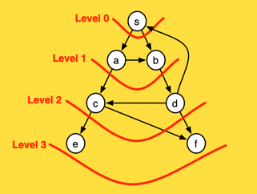
Implementation
We still need to have the means to maintain the following information while we are searching the graph
nodestate, in terms of processed / not processedparentnode, that is, the node we visited fromunitin terms of distance / level
The Tracker structure simplifies managing the node processing state of the graph, and we will use as part of our implementation.
Both Tracker and VecDeque structures are part the Graph processing State structure PDState which in turn, implements the BFSearch abstraction
As a result, the following implementation realises the BFS algorithm
fn path_distance(&self, start:Node, goal:Node) -> Option<(Vec<Node>, Cost)> {
/// Structure for maintaining processing state while processing the graph
struct PDState {
tracker: Tracker,
queue: VecDeque<Node>
}
/// State Constructor from a given Graph and related the initiation requirements for the algo
impl PDState {
fn new(g: &Graph) -> PDState {
PDState {
tracker: g.get_tracker(Undiscovered, 0, None),
queue: VecDeque::<Node>::new()
}
}
}
/// Implementation of Path Search abstraction
impl BFSearch for PDState {
type Output = (Vec<Node>, Cost);
type QueueItem = Node;
/// Initiate search by pushing starting node and mark it as Discovered
fn initiate(&mut self, node:Node) -> &mut Self {
self.queue.push_back(node);
self.tracker[node].visited(Discovered);
self
}
/// Get the first item from the start of the queue
fn pop(&mut self) -> Option<Self::QueueItem> { self.queue.pop_front() }
/// extract Node from the queued Item
fn node_from_queued(&self, node: &Self::QueueItem) -> Node { *node }
/// Has it seen before ?
fn is_discovered(&self, node: NodeType) -> bool { self.tracker[node.into()].is_discovered() }
/// Process Edge before pushing it at the end of the queue
fn pre_process_edge(&mut self, src: Node, dst: NodeType) -> bool {
let level = self.tracker[src].dist + 1;
// mark visited, calculate distance & store parent for distance
self.tracker[dst.into()].visited(Discovered)
.distance(level)
.parent(src);
true
}
/// Construct queued item from Node
fn node_to_queued(&self, node: Node) -> Self::QueueItem { node }
/// Push item at the end of the queue
fn push(&mut self, item: Self::QueueItem) { self.queue.push_back(item) }
/// Extract path discovered so far
fn extract_path(&self, start: Node) -> Self::Output { self.tracker.extract(start) }
}
// Construct the state structure and search for a path that exists between start -> goal
PDState::new(self).path_search(self, start, goal )
}
References:
Dijkstra's Minimum Path Cost
Here we cover problems involving finding the shortest path between vertices in a graph with weights (lengths) on the edges. One obvious application is in finding the shortest route from one address to another, however shortest paths have many other application1
Dijkstra's Algorithm
Dijkstra’s is an important algorithm both because it is an efficient algorithm for an important problem, but also because it is a very elegant example of an efficient greedy algorithm that generates optimal solutions on a nontrivial task.
The below animated image demonstrated how the algorithm works

The above depiction performs the below steps
- push the starting node
ain the priority queue with cost0 - Pop the node with the lowest cost in the queue; at fist this is
a- if the 'node' matches our target node
b- extract path with minimum cost
- terminate
- For each
edge nodeattached to thenode- calculate
cost distance - if
edge nodehascostlarger to the calculatedcost distancethen assign cost toedge node, otherwise do not update cost - push
(edge node, cost)to the priority queue and repeat
- calculate
- if the 'node' matches our target node
Prioritised Queue
Dijkstra's differentiating approach is that we must always process next the node with the lowest cost in the queue. To achieve this we have to make use of the BinaryHeap collection structure. The use of such structure help us to maintain on ordered-queue by node-cost, hence keeping the node with lowest-cost at the top of the heap/queue.
#[derive(Debug,Clone,Copy,Hash,Eq,PartialEq)]
pub enum NodeType {
N(Node),
NC(Node, Cost)
}
impl From<NodeType> for Node {
fn from(nt: NodeType) -> Self {
match nt { NodeType::N(node)|NC(node, _) => node }
}
}
impl From<Node> for NodeType {
fn from(value: Node) -> Self {
NodeType::N(value)
}
}
impl Ord for NodeType {
fn cmp(&self, other: &Self) -> Ordering {
other.partial_cmp(self).unwrap_or_else(|| panic!("Edge::cmp() - cannot compare nodes with type NodeType::N"))
}
}
impl PartialOrd for NodeType {
fn partial_cmp(&self, other: &Self) -> Option<Ordering> {
match other {
NodeType::N(_) => None,
NC(_, cost) => {
let NC(_,sc) = self else { panic!("Edge::partial_cmp() - cannot compare NodeType::NC against NodeType::N") };
Some(cost.cmp(sc))
}
}
}
}
Implementation
With the ordered-queue logic in place, we still need to have the means to maintain the following information per node and while we are searching the graph
nodestate, in terms of processed / not processedparentnode, that is, the node we visited fromunitin terms of cost or distance
The Tracker structure simplifies managing the node processing state of the graph, and we will use as part of our implementation.
Both Tracker and BinaryHeap structures are part the Graph processing State structure PSState which in turn, implements the BFSearch abstraction
As a result, the algorithm can now be realised by the following implementation
fn path_shortest(&self, start: Node, goal: Node) -> Option<(Vec<Node>, Cost)> {
/// Structure for maintaining processing state while processing the graph
struct PSState {
tracker: Tracker,
queue: BinaryHeap<NodeType>
}
/// State Constructor from a given Graph and related shortest path initiation requirements
impl PSState {
fn new(g:&Graph) -> PSState {
PSState {
// reset all node costs to MAX value with no path-parent nodes
tracker: g.get_tracker(Undiscovered, Cost::MAX, None),
// We are using a BinaryHeap queue in order to always have first in the queue
// the node with lowest cost to explore next
queue: BinaryHeap::new()
}
}
}
/// Implementation of Path Search abstraction
impl BFSearch for PSState {
type Output = (Vec<Node>,Cost);
type QueueItem = NodeType;
/// Processing of starting node
fn initiate(&mut self, start: Node) -> &mut Self {
// set cost at start node to zero with no parent node
self.tracker[start].distance(0);
// push start node in the BinaryHeap queue
self.queue.push(NC(start,0));
self
}
/// get the element with the lowest cost from the queue
fn pop(&mut self) -> Option<Self::QueueItem> { self.queue.pop() }
/// extract node from the queued item retrieved
fn node_from_queued(&self, qt: &Self::QueueItem) -> Node {
(*qt).into()
}
/// Process current node after all edges have been discovered and marked for processing
fn post_process_node(&mut self, node: Node) {
self.tracker[node].visited(Discovered);
}
/// has the given node been seen before ?
fn is_discovered(&self, node: NodeType) -> bool { self.tracker[node.into()].is_discovered() }
/// Process given edge and return `true` to proceed or `false` to abandon further edge processing
fn pre_process_edge(&mut self, src:Node, dst: NodeType) -> bool {
if let NC(dst, cost) = dst {
// calc the new path cost to edge
let edge_cost = self.tracker[src].dist + cost;
// if new cost is better than previously found
if edge_cost > self.tracker[dst].dist {
// Do no process this edge any further
false
}
else {
// set the new lower cost @node along with related parent Node
self.tracker[dst].distance(edge_cost).parent(src);
// and ensure the edge is processed further
true
}
}
else {
// somehow we got the wrong NodeType here
panic!("pre_process_edge(): Must use NodeType::NC")
}
}
/// Construct the item to be queued, that is, (Node,Cost)
fn node_to_queued(&self, node: Node) -> Self::QueueItem {
NC(node, self.tracker[node].dist )
}
/// Push into (Node,Cost) into the queue
fn push(&mut self, item: Self::QueueItem) { self.queue.push(item) }
/// Get search path discovered so far
fn extract_path(&self, start: Node) -> Self::Output { self.tracker.extract(start) }
}
// Construct the state structure and search for a path that exists between start -> goal
PSState::new(self).path_search(self,start,goal)
}
References:
Abstracting Depth First Search
Depth First Search is applied on a number of algorithms with the same pattern
- Do some work on the node
beforeexploring any paths - For edge of the node
- Process the edge
beforeperforming search on it - Perform search on the edge
- Process the edge
afterall paths from this edge, got explored
- Process the edge
- Do some work on the node
afterall paths from this node, got explored
Different algorithms have different demands on how what the graph state should be and which of those steps are required and in what way
The above can be observed on how the Graph State realises the DFSearch trait for Topological sort and Strongly Connected Components implementation
Implementation
As a result, we can define a trait for any Graph State structure, that provide the means of how the pre-processing / post-processing steps should be performed and in relation to the required state and behaviour.
It is important to note here the recursive nature of the search and hence the need for self to maintain the internal state while recursively searching the graph
/// Depth First Search abstraction, enabling a variety of implementations such as, strongly connected components, topological sort, etc
/// The `Path_Search()` default implementation uses the below functions while it leaves their behaviour to the trait implementer
/// - Node pre-processing step fn()
/// - Node post-processing step fn()
/// - Node pre-processing edge fn()
/// - abort recursion fn()
/// - Path return fn()
/// - node state fn()
trait DFSearch {
type Output;
/// work to be done before edges are explored, that is, discovered but not processed
/// uses incl. measuring entry time, set node state, etc
fn pre_process_node(&mut self, node: Node) -> &mut Self;
/// work to be done after the edges have been explored; hence the node is now processed
/// uses incl. measuring exit time, set node parent, save node in path, etc
fn post_process_node(&mut self, node: Node) -> &mut Self;
/// work to be done after the node pre-processed and before the edges is explored
/// uses incl. check for loops, categorize edge into types, etc
/// default implementation does nothing otherwise you have to override
fn pre_process_edge(&mut self, _edge: Edge) -> &mut Self { self }
/// Abort the recursion
/// uses incl. detecting the graph is not Direct acyclic, etc
fn abort(&self) -> bool { false }
/// return the path at position and given the pre/post processing steps
fn path(&self) -> &Self::Output;
/// return whether the node has been seen before
fn is_discovered(&self, node: Node) -> bool;
/// Default implementation of depth first search
fn path_search(&mut self, g: &Graph, start: Node) -> Option<&Self::Output> {
// Entering the node at time tick()
if self.pre_process_node(start).abort() { return None }
// processing the edges
// println!("Enter: {start}:{:?}", self.tracker[start]);
if let Some(edges) = g.edges.get(&start) {
for &dst in edges {
let d = dst;
if self.pre_process_edge(Edge(start,d)).abort() { return None };
if !self.is_discovered(d.into()) {
self.path_search(g, d.into());
}
}
}
// Exiting the node at time tick()
if self.post_process_node(start).abort() { return None };
// println!("Exit: {start}:{:?}", self.tracker[start]);
Some(self.path())
}
}
Topological Sort Algorithm
A topological sort is an ordering of the nodes of a directed graph such that if there is a path from node a to node b, then node a appears before node b in the ordering.
Graph Recursion and Processing state
The idea is to go through the nodes of the graph and always begin a depth-first search at the current node if it has not been processed yet. During the searches, the nodes have three possible states:
- state 0: the node has not been processed (white)
- state 1: the node is under processing (light gray)
- state 2: the node has been processed (dark gray)
Initially, the state of each node is 0. When a search reaches a node for the first time, its state becomes 1. This is our pre-processing step for the node
If the graph contains a cycle, we will find this out during the search, because sooner or later we will arrive at a node whose state is 1. In this case, it is not
possible to construct a topological sort. This is the pre-processing step for the edge.
If the graph does not contain a cycle, we can construct a topological sort by adding each node to a list when the state of the node becomes 2. This is our post-processing step for the node.
This list in reverse order is a topological sort
As a result we can implement the DFSearch trait in the following way in relation to the above pre-processing & post-processing steps
/// Graph state that we need to maintain
/// for the topological sort algorithm
struct TState {
tracker: Tracker,
path: Vec<Node>,
abort: bool
}
impl TState {
/// Construct a new `GraphState` given a `Graph`
fn new(g: &Graph) -> TState {
TState {
tracker: g.get_tracker(Undiscovered, 0, None),
path: Vec::new(),
abort: false
}
}
}
/// Topological sort implementation of the TState
/// There is no need for exit/entry time or tracking parent node.
/// Here we only need to save the `node` in the `tracker.path` following its full processing
impl DFSearch for TState {
type Output = Vec<Node>;
/// mark node as visited but not processed
fn pre_process_node(&mut self, node: Node) -> &mut Self {
self.tracker[node].visited(Discovered);
self
}
/// Important we store the node in the path following node processing complete
fn post_process_node(&mut self, node: Node) -> &mut Self {
self.tracker[node].visited(Processed);
self.path.push(node);
self
}
/// before we jump into the edge for further exploration
/// we check if the edge is actually a node already `Discovered` but not `Processed`
/// if that is the case, we set the abort flag to `True`
fn pre_process_edge(&mut self, edge: Edge) -> &mut Self {
let Edge(_,dst) = edge;
if self.tracker[dst.into()].visited == Discovered {
self.abort = true;
}
self
}
/// Implement the abort fn() so we can stop the path search recursion
fn abort(&self) -> bool {
self.abort
}
/// extract the aggregate path stored
fn path(&self) -> &Self::Output {
&self.path
}
/// return true if node is either `Discovered` or `Processed`
fn is_discovered(&self, node: Node) -> bool {
self.tracker[node].is_discovered()
}
}
Implementation
When the search has completed and has exhausted all paths the path member of the Tracker structure will now contain the order by which the nodes have been visited. As a result we only have to reverse such order and return it.
/// Topological Sort trait
pub trait TopologicalSort {
fn topological_sort(&self) -> Option<Vec<Node>>;
}
/// Graph implementation of Topological Sort
impl TopologicalSort for Graph {
/// Implementation of topological sort for Graph
fn topological_sort(&self) -> Option<Vec<Node>> {
// initiate the run state structure for calculating the topological sort of the graph
let mut ts = TState::new(self);
// Construct a path aggregate, that is, each path found is joined up together
// achieved by appending the path of each iteration onto tracker.path
// see post_processing() of TState implementation of DFSearch
for &node in &self.nodes {
// if node is not yet visited && search hasn't thrown a NONE, that is, we've found a circle
if !ts.is_discovered(node)
&& ts.path_search(self, node).is_none() {
return None
}
}
// Extract & reverse path from tracker so we extract the topological sort
ts.path.reverse();
Some(ts.path)
}
}
Strong Connectivity
In a directed graph, the edges can be traversed in one direction only, so even if the graph is connected, this does not guarantee that there would be a path from a node to another node. For this reason, it is meaningful to define a new concept that requires more than connectivity.
A graph is strongly connected if there is a path from any node to all other nodes in the graph. The strongly connected components of a graph divide the graph into strongly connected parts that are as large as possible. The strongly connected components form an acyclic component graph that represents the deep structure of the original graph.
The yellow directed acyclic graph is the condensation of the blue directed graph. It is formed by contracting each strongly connected component of the blue graph into a single yellow vertex
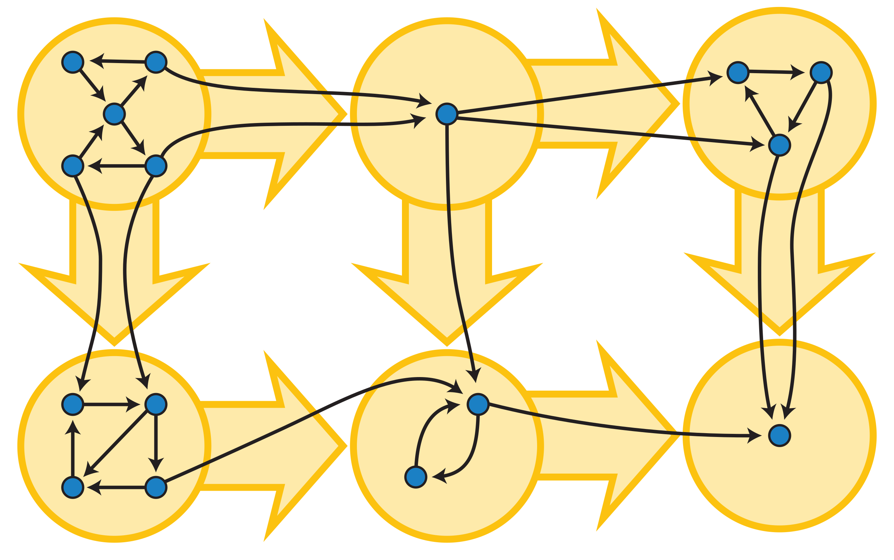
Kosaraju’s algorithm
Kosaraju’s algorithm is an efficient method for finding the strongly connected components of a directed graph.
Approach
The algorithm performs two depth-first searches
- the first search constructs an ordered node list of nodes according to the structure of the graph.
- the second search applies the ordered node list against the reversed edges of the graph in order to find the strongly connected components.
Graph Recursion and Processing State
In the first Depth First Search we need to calculate per node
- the exit
time, that is, the time in which the node has beenProcessed, that is, there is nothing left to be found. - the node state in relation to any of the states,
Undiscovered,DiscoveredorProcessed
Recursion is a key implementation approach that will enable us to perform
- Node pre-processing, e.g. capture/log the
entrytime and before search any deeper - Node post-processing, e.g. capture/log the
exittime after there is no path remaining to be found from this node
As a result to measure time across recursions and without the use of a global variable, we resort to the GraphState struct that
- implements the
DFSearchtrait that provides the recursive function - holds the recursion state for
time,pathat node, nodestate&ordered list
In addition, GraphState provide us with the Tracker structure that simplifies handling of the node processing state while we are search the graph.
/// GraphState struct enable us to maintain the processing state of the graph
/// and while we apply a recursive approach in searching the graph
struct GraphState {
tracker: Tracker,
queue: BinaryHeap<NodeType>,
time: Cost,
path: Vec<Node>
}
impl GraphState {
/// Construct a new `GraphState` given a `Graph`
fn new(g: &Graph) -> GraphState {
GraphState {
tracker: g.get_tracker(Undiscovered, 0, None),
queue: BinaryHeap::new(),
time: 0,
path: Vec::new()
}
}
/// Extract from `BinaryHeap` the exit times per ordered from max -> min
fn get_timings(&self) -> Vec<(Node, Cost)> {
self.queue.iter().rev().map(|&s| {
let NC(n, c) = s else { panic!("get_timings(): node type is not NodeType::NC") };
(n,c)
} ).collect::<Vec<_>>()
}
}
/// Graph State implements DFSearch trait and particularly provides specific implementation for
/// the calculation of the strongly connected components, in terms of node post/pre processing fn(),
/// path return fn() and node state fn()
impl DFSearch for GraphState {
type Output = Vec<Node>;
/// capture time of entry and set node state to visited,
/// given the node's edges have yet be visited
fn pre_process_node(&mut self, node: Node) -> &mut Self {
// Entering the node at time tick()
self.time += 1;
self.tracker[node].visited(Discovered).distance(self.time);
self
}
/// capture time of exit and set node state to processed,
/// given all edges have also been processed
fn post_process_node(&mut self, node: Node) -> &mut Self {
// Exiting the node at time tick()
self.time += 1;
self.tracker[node].visited(Processed).distance(self.time);
self.queue.push(NC(node, self.time));
self.path.push(node);
self
}
/// Return the path as it was calculated by the post processing step
fn path(&self) -> &Self::Output {
&self.path
}
/// return the state of the node
fn is_discovered(&self, node: Node) -> bool {
self.tracker[node].is_discovered()
}
}
Transpose the graph
The GraphState will help us capture the node order by which we will run search on the second pass. However, the second pass must run against the transposed graph, that is, the graph with all edges reversed.
impl Graph {
pub fn transpose(&self) -> Graph {
self.nodes.iter()
.fold(Graph::new(), |mut g, &node| {
g.nodes.insert(node);
// reverse the edges for this node, if any
if let Some(edges) = self.edges.get(&node) {
edges.iter()
.for_each(|&e|{
g.nodes.insert(e.into());
g.edges.entry(e.into()).or_default().insert(node.into());
});
}
g
})
}
}
Final implementation
With all of the above elements in place, The below function provides an implementation approach to the algorithm
pub trait ConnectedComponents {
fn strongly_connected(&self) -> Vec<Vec<Node>>;
}
impl ConnectedComponents for Graph {
fn strongly_connected(&self) -> Vec<Vec<Node>> {
// initiate the run state structure for calculating the scc of the graph
// and in order to enable recursive searching in rust
let mut gs = GraphState::new(self);
// Pass 1: Find all paths and calculate entry and exit times per node
self.nodes.iter()
.for_each(|&start| {
// println!("Start >> {start}");
if !gs.tracker[start].is_discovered() {
let path = gs.path_search(self, start);
println!("Pass 1: Path {:?}",path);
gs.path.clear();
}
});
// Extract node sequence ordered by highest exit times
let v = gs.get_timings();
println!("Timings: {:?}",v);
// reverse the graph edges
let tg = self.transpose();
// reset run state
gs = GraphState::new( &tg);
// Pass 2: Identify and store each strongly connected component identified
v.into_iter()
.fold(Vec::new(),|mut components, (node, _)| {
if !gs.is_discovered(node) {
// extract new component
let component = gs.path_search(&tg, node ).unwrap();
println!("Pass 2: Component [{}]{:?}", component.len(), component);
// store component found
components.push(component.clone() );
// reset path so to remove last found component
gs.path.clear();
}
components
})
}
}
Minimum Spanning Tree
A minimum spanning tree (MST) or minimum weight spanning tree is a subset of the edges of a connected, edge-weighted undirected graph that connects all the vertices together, without any cycles and with the minimum possible total edge weight.1
That is, it is a spanning tree whose sum of edge weights is as small as possible.
 More generally, any edge-weighted undirected graph (not necessarily connected) has a minimum spanning forest, which is a union of the minimum spanning trees for its connected components.
More generally, any edge-weighted undirected graph (not necessarily connected) has a minimum spanning forest, which is a union of the minimum spanning trees for its connected components.
There are many use cases for minimum spanning trees. One example is a telecommunications company trying to lay cable in a new neighborhood. If it is constrained to bury the cable only along certain paths (e.g. roads), then there would be a graph containing the points (e.g. houses) connected by those paths. Some paths might be more expensive, because they are longer, or require the cable to be buried deeper; these paths would be represented by edges with larger weights
Kruskal's MST Algorithm
In Kruskal’s algorithm, we start with the spanning tree containing only the nodes of the graph and with no any edges connecting the nodes.
Then the algorithm goes through, adding the edges one at a time, ordered by their weights, and as long as the edge is not creating a cycle.
Approach
Let's look at the following input graph as an example.
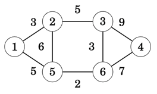
The algorithm maintains the components of the tree. Initially, each node of the graph belongs to a separate component. As shown below there are six components since none of the nodes are connected.
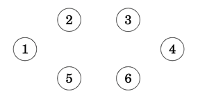
We always start with the lowest weighted edge by adding it to the tree, in this case (5,6). As result, two components are now merged into one as in the below example where nodes 5 and 6 form a new component
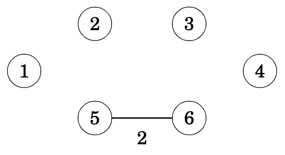
Next in order are edges (6,3),(1,2),... and so on, until finally we have added all edges in the graph, one by one and with all nodes now merged into a single component, hence the minimum spanning tree has been found
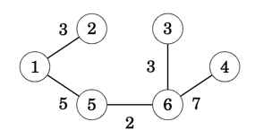
Overall the approach can be summarised as following
- Phase 1: Sort Edges by minimum cost first
- Phase 2: Build Minimum Spanning Tree
- Create an empty graph
G - Initiate the graph components, that is, one per node
- While there are
> 1graph components remaining- Retrieve edge with the lowest weight
(src,dst) - Find component for
src, let's say it issrc' - Find component for
dst, let's say it isdst' - if
src'is different todst'then- Merge
dst'into thesrc'component - Add edge
(src,dst)into the graphG
- Merge
- Retrieve edge with the lowest weight
- Create an empty graph
Super Nodes as Components
The SuperNodes struct used to solve the minimum cut algorithm is more or less the right tool in this instance given that the definition of a super node is synonymous to a graph component.
The SuperNodes structure, provides us with the
- merging of two super node components into a super node
- finding of the super node component that a given node belongs to
#[derive(Debug)]
/// Helper Structure that holds the `set` of merged nodes under a super node `key`
/// The HashMap therefore is used as [Key:Super Node, Value: Set of Merged Nodes]
/// A super node's set is a `Graph Component` in itself, that is, you can visit a Node from any other Node within the set
pub struct SuperNodes {
super_nodes:HashMap<Node,HashSet<Node>>
}
impl Clone for SuperNodes {
fn clone(&self) -> Self {
SuperNodes { super_nodes: self.super_nodes.clone() }
}
}
impl SuperNodes {
/// Total size of `Graph Components`, that is, super nodes
pub fn len(&self) -> usize { self.super_nodes.len() }
/// Given an Graph node, the function returns the Super Node that it belongs
/// for example given the super node [Key:1, Set:{1,2,3,4,5}]
/// querying for node `3` will return `1` as its super node
pub fn find_supernode(&self, node: &Node) -> Node {
// is this a super node ?
if self.contains_supernode(node) {
// if yes, just return it
*node
} else {
// otherwise find its super node and return it
// get an Iterator for searching each super node
let mut sets = self.super_nodes.iter();
loop {
// If next returns [Super Node, Node Set] proceed otherwise exist with None
let Some((&src, set)) = sets.next() else { break None };
// Is the queried Node in the set ?
if set.contains(node) {
// yes, return the super node
break Some(src)
}
}.unwrap_or_else(|| panic!("find_supernode(): Unexpected error, cannot find super node for {node}"))
}
}
/// Returns the graph component, aka `set` of nodes, for a given super node `key`,
/// otherwise `None` if it doesn't exist
pub fn contains_supernode(&self, node: &Node) -> bool {
self.super_nodes.contains_key(node)
}
/// The function takes two super nodes and merges them into one
/// The `dst` super node is merged onto the `src` super node
pub fn merge_nodes(&mut self, src:Node, dst:Node) -> &mut HashSet<Node> {
// remove both nodes that form the random edge and
// hold onto the incoming/outgoing edges
let super_src = self.super_nodes.remove(&src).unwrap();
let super_dst = self.super_nodes.remove(&dst).unwrap();
// combine the incoming/outgoing edges for attaching onto the new super-node
let super_node = super_src.union(&super_dst).copied().collect::<HashSet<Node>>();
// re-insert the src node as the new super-node and attach the resulting union
self.super_nodes.entry(src).or_insert(super_node)
}
/// Provides an iterator that yields the Node Set of each super node
pub fn iter(&self) -> SuperNodeIter {
SuperNodeIter { iter: self.super_nodes.iter() }
}
}
/// Ability for SuperNode struct to use indexing for search
/// e.g super_node[3] will return the HashSet corresponding to key `3`
impl Index<Node> for SuperNodes {
type Output = HashSet<Node>;
fn index(&self, index: Node) -> &Self::Output {
&self.super_nodes[&index]
}
}
/// HashNode Iterator structure
pub struct SuperNodeIter<'a> {
iter: hash_map::Iter<'a, Node, HashSet<Node>>
}
/// HashNode Iterator implementation yields a HashSet at a time
impl<'a> Iterator for SuperNodeIter<'a> {
type Item = &'a HashSet<Node>;
fn next(&mut self) -> Option<Self::Item> {
if let Some(super_node) = self.iter.next() {
Some(super_node.1)
} else { None }
}
}
BinaryHeap for edge Ordering
To provide an ordered edge list we use the BinaryHeap collection that uses the edge's weight as the prioritisation key. The following Step implementation provide us with the desirable result.
/// BinaryHeap Step structure containing `Edge(src,(dst,cost))` tuple
/// The `cost` is only used as the prioritisation key for the `Heap`
/// Implementing MinHeap through reverse comparison of Other against Self
impl PartialOrd for Edge {
fn partial_cmp(&self, other: &Self) -> Option<Ordering> {
match other.1 {
N(_) => other.partial_cmp(self),
NC(_, cost) => {
let Edge(_,NC(_,sc)) = self else { panic!("") };
cost.partial_cmp(sc)
}
}
}
}
impl Ord for Edge {
fn cmp(&self, other: &Self) -> Ordering {
self.partial_cmp(other).unwrap()
}
}
Additionally, we have the following helper Graph functions that provide us with
- the ordered edge list
- the sum of weights for all edges in the graph
- adding an edge into the graph
/// Sums up the cost of all weighted edges
pub fn sum_edges(&self) -> Cost {
self.edges
.values()
.fold(0, |cost, edges| {
cost + edges.iter()
.map(|&dst| {
let NC(_,c) = dst else { panic!("get_mst_cost(): Edge destination node is not of type NodeType::NC") };
c
})
.reduce(|acc,c| acc + c )
.unwrap()
}) >> 1 // in an undirected graph we count twice the edge hence dividing by 2
}
/// Adds a new Edge to the graph
pub fn push_edge(&mut self, edge: Edge) {
let Edge(src, dst) = edge;
self.nodes.insert(src);
self.edges.entry(src)
.or_default()
.insert(dst);
let NC(dst,cost) = dst else { panic!("") };
self.nodes.insert(dst);
self.edges.entry(dst)
.or_default()
.insert(NC(src,cost));
}
/// Returns Graph's edges in the form of a MinHeap, that is,
/// the lowest cost edge at the top of the heap
pub fn get_edges_by_cost(&self) -> BinaryHeap<Edge> {
self.edges.iter()
.fold(BinaryHeap::new(), |mut heap, (&src, edges)| {
heap.extend(
edges.iter().map(|&dst| Edge(src,dst))
);
heap
})
}
Implementation
As a result, the following implementation consolidates all of the above into the Kruskal's algorithm implementation.
/// MST using Kruskal's algorithm implementation
pub fn mst_kruska(&self) -> Option<Graph> {
// Get the ordered heap by lowest cost Edge on top
let mut heap = self.get_edges_by_cost();
// Keeps the graph's components, that is, a super node is a graph component's lead node
// The initial state is for each node to be a lead component node with a component of its own
let mut snodes = self.get_super_nodes();
// the output graph that will hold *only* the edges
// that form the minimum spanning tree
let mut graph = Graph::new();
// As long as more than 2 components
while snodes.len() > 1 {
// get the edge with the lowest cost
// otherwise if we've run out of edges while there are 2 or more components
// then the graph IS NOT CONNECTED
let Some(edge) = heap.pop() else { return None };
let Edge(src, NC(dst, _)) = edge else { panic!("mst_kruska() - Cannot find NodeType::NC") };
// print!("({src:2}->{dst:2}):{cost:6} - ");
// if src is not a super node then get its super node
let src = snodes.find_supernode(&src);
// if dst is not a super node then get its super node
let dst = snodes.find_supernode(&dst);
// if src component differs from dst component then merge the two and save the edge connecting them
if src != dst {
snodes.merge_nodes(src, dst);
graph.push_edge(edge);
// println!("Store");
} else {
// println!("Skip");
}
}
Some(graph)
}
Prim's MST Algorithm
Prim’s algorithm resembles Dijkstra’s algorithm. The difference is that Dijkstra’s algorithm always selects an edge whose distance from the starting node is minimum, but Prim’s algorithm simply selects the minimum weight edge that adds a new node to the tree
Approach
The algorithm first adds an arbitrary node to the tree. After this, the algorithm always chooses a minimum-weight edge that adds a new node to the tree. Finally, all nodes have been added to the tree and a minimum spanning tree has been found
To illustrate how the algorithm works let's consider the following input graph
When we start, the minimum spanning tree has no edges
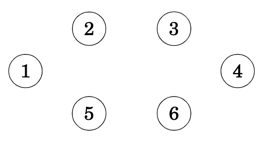
We then select an arbitrary node, in this case 1, and from edges (1,2),(1,5) we choose the edge (1,2) that has the lowest weight, and we then add it into the output tree. At this point in time, nodes [1,2] are spawned into the evolving tree.
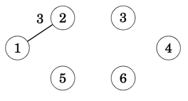
With edge (1,2) added to the tree, we're looking to all edges that cross between the tree and the non-tree nodes. In this case we have edges [(1,5),(2,5),(2,3)] with (2,3) being the one that has the lowest weight from all known crossing edges.
At this point the tree contains nodes [1,2,3] with nodes remaining outside the tree as [5,6,4]
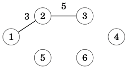
We repeat the process, always expanding one node at a time and adding to the tree the lowest weight edge each time and until there are no more nodes remaining outside the tree.
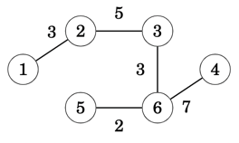
Min-Ordered edge BinaryHeap
To provide a minimum-ordered edge list, we make use of the BinaryHeap collection with the edge's weight as the prioritisation key. The following Step implementation provide us with the desirable result
/// BinaryHeap Step structure containing `Edge(src,(dst,cost))` tuple
/// The `cost` is only used as the prioritisation key for the `Heap`
/// Implementing MinHeap through reverse comparison of Other against Self
impl PartialOrd for Edge {
fn partial_cmp(&self, other: &Self) -> Option<Ordering> {
match other.1 {
N(_) => other.partial_cmp(self),
NC(_, cost) => {
let Edge(_,NC(_,sc)) = self else { panic!("") };
cost.partial_cmp(sc)
}
}
}
}
impl Ord for Edge {
fn cmp(&self, other: &Self) -> Ordering {
self.partial_cmp(other).unwrap()
}
}
Implementation
Few key points related to the below implementation
- We hold the evolving tree in a
Graphstructure with itsnodesHashSetrepresenting the tree's Component for queries - When we spawn a new node, we don't search for the minimum weight edge, rather we store all crossing edges in the
heap; - Edges added in the
heapmight go stale, that is, future iterations cause edges nodes to be pulled inside thetreecomponent, hence when extracting the min-weight edge from theheapwe need to ensure the edge isn't stale.
As a result, the following implementation consolidates all of the above into the Prim's algorithm implementation.
/// MST using Prim's algorithm implementation
pub fn mst_prim(&self) -> Option<Graph> {
// Create an empty Graph/Tree to add one edge at a time
// we'll be using g.node as the Tree's Component invariant,
// that is, the Component that contains all vertices absorbed by the Tree
let mut tree = Graph::new();
// Min-Ordered heap with all edges found crossing the evolving tree
let mut heap = BinaryHeap::<Edge>::new();
// seed with first vertex
let &start = self.nodes.iter().next().unwrap();
heap.push(Edge(start, NC(start, 0)));
// spawn a node at a time until we have spawned all graph nodes
// while tree component isn't equal input component
while tree.nodes != self.nodes {
// spawn a new edge node from the queue with the smallest edge weight
let src = match heap.pop() {
// if the queue is empty, but still have nodes to spawn
// then either (a) the graph is not connected or (b) is a directed graph
None => return None,
// spawn the destination node from edge
Some(Edge(_, NC(dst, _))) => dst,
Some(Edge(_, N(_))) => panic!("mst_prim(): Extracted edge using wrong NodeType::N"),
};
// Add all edges that are crossing the tree Component given the spawned node
// and have not yet been spawned, that is, they are NOT already part of tree component
heap.extend(self.edges.get(&src)
.unwrap_or_else(|| panic!("mst_prim(): Node ({src}) has not edges; Graph is not undirected or connected"))
.iter()
// remove any edge node already in the mst, part of Component X
.filter(|&&dst| !tree.nodes.contains(&dst.into()))
// push edges crossing Component X, that is,
// src IN Component X, dst NOT IN Component X
.map(|&dst| Edge(src, dst))
);
// find the min-weigh edge that is crossing the current tree component
// don't remove from heap as we need to spawn dst node for the next iteration
while let Some(&edge) = heap.peek() {
let Edge(src, dst) = edge;
// Is this edge a stale or a valid one, that is, crosses the tree component
if HashSet::from([src, dst.into()]).is_subset(&tree.nodes) {
// Some times heap holds older edges that, after few iterations they get stale,
// that is, both edges nodes have been moved into the tree component
heap.pop();
} else {
// either src or dst edge nodes are outside the tree component
// hence add the edge into the tree
tree.push_edge(edge);
// exit the while loop since we've found the edge with the min weight
break
}
}
}
Some(tree)
}
Single-linkage clustering
Single-linkage clustering is one of several methods of hierarchical clustering. It is based on grouping clusters in bottom-up fashion (agglomerative clustering), at each step combining two clusters that contain the closest pair of elements not yet belonging to the same cluster as each other. A drawback of this method is that it tends to produce long thin clusters in which nearby elements of the same cluster have small distances, but elements at opposite ends of a cluster may be much farther from each other than two elements of other clusters. This may lead to difficulties in defining classes that could usefully subdivide the data1
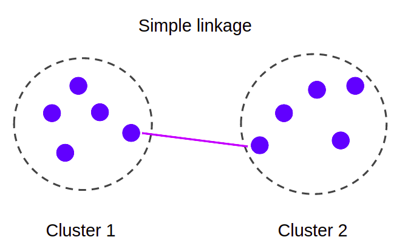
Approach
At the start all points form their own component. Then at each iteration, we fuse together those components that are connected by the shortest distance edge. We repeat until the number of components left is equal to the number of clusters required.
This is exactly how the Kruska's algorithm works, with the only difference, the produced Minimum Spanning Tree can be seen as a single component / cluster, therefore we have to stop the process until k components/clusters are left.
However, if we stop the at k components our min spanning tree won't have the remaining edges connecting the clusters, hence we won't know the clusters' spacing, that is, the distance between the closest together pair of separated nodes.
ClusterSet Structure
Therefore, we need to capture both (a) the min spanning tree and (b) the nodes forming the k clusters requested
The ClusterSet structure captures such information and further provides the means to query the spacing of a clustering, through the use of the following functions,
crossing_edges()returns thosemstedges crossing the nodeclustersspacing()returns the smallestmstedge
struct ClusterSet {
mst: Graph,
clusters : SuperNodes
}
impl ClusterSet {
/// spacing of a clustering. It's the distance between the closest together pair of separated points
/// We want all of the separated points to be as far apart as possible.
/// That is, we want the spacing to be big. The bigger the better
fn spacing(&self) -> Edge {
self.crossing_edges().pop().unwrap_or_else(|| panic!("spacing(): no edges found spanning the clusters"))
}
fn crossing_edges(&self) -> BinaryHeap<Edge>{
let mut input = self.mst.get_edges_by_cost();
let mut output = BinaryHeap::<Edge>::new();
while let Some(edge) = input.pop() {
let Edge(src, dst) = edge;
if self.clusters.find_supernode(&src) != self.clusters.find_supernode(&dst.into()) {
output.push(edge);
}
}
output
}
}
Implementation
With the ClusterSet data structure in place we implemented the Graph implementation of the Clustering trait looks as follows
trait Clustering {
fn find_clusters(&self, k: usize) -> Option<ClusterSet>;
}
impl Clustering for Graph {
fn find_clusters(&self, k: usize) -> Option<ClusterSet> {
// Get the ordered heap by lowest cost Edge on top
let mut heap = self.get_edges_by_cost();
// Keeps the graph's components, that is, a super node is a graph component's lead node
// The initial state is for each node to be a lead component node with a component of its own
let mut snodes = self.get_super_nodes();
// the output graph that will hold *only* the edges
// that form the minimum spanning tree
let mut graph = Graph::new();
let mut clusters = None;
// As long as more than 2 components
while snodes.len() > 1 {
// get the edge with the lowest cost
// otherwise if we've run out of edges while there are 2 or more components
// then the graph IS NOT CONNECTED
let Some(edge) = heap.pop() else { return None };
let Edge(src, NC(dst, _)) = edge else { panic!("find_clusters() - Cannot find NodeType::NC") };
// print!("({src:2}->{dst:2}):{cost:6} - ");
// if src is not a super node then get its super node
let src = snodes.find_supernode(&src);
// if dst is not a super node then get its super node
let dst = snodes.find_supernode(&dst);
// if src component differs from dst component then merge the two and save the edge connecting them
if src != dst {
snodes.merge_nodes(src, dst);
graph.push_edge(edge);
// println!("Store");
} else {
// println!("Skip");
}
if snodes.len() == k {
clusters = Some(snodes.clone())
}
}
Some(ClusterSet{
mst: graph,
clusters: clusters.unwrap()
})
}
}